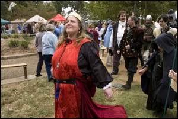
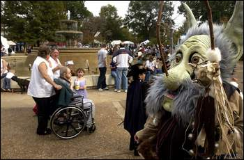

<!DOCTYPE html PUBLIC "-//w3c//dtd html 4.0 transitional//en">
<html>
<head>
  <meta http-equiv="Content-Type"
 content="text/html; charset=iso-8859-1">
  <meta name="Author" content="James L. Matterer">
  <meta name="GENERATOR"
 content="Mozilla/4.7 [en] (Win98; I) [Netscape]">
  <title>Articles on the Alabama Renaissance Faire</title>
</head>
<body
 style="background-image: url(http://www.godecookery.com/images/paper4.jpg); color: rgb(0, 0, 0); background-color: rgb(255, 255, 255);"
 alink="#000000" link="#800000" vlink="#808000">
<center></center>
<center>
<table border="0" cellpadding="5" cellspacing="0" cols="1" width="95%">
  <tbody>
    <tr>
      <td>
      <center><b><font size="+1">Articles on the Alabama Renaissance
Faire</font></b><br>
      <b><br>
      </b>
      <hr noshade="noshade" size="1" width="80%">
      <div style="text-align: center;">
      <div style="text-align: left;">
      <div style="text-align: justify;">
      <div style="text-align: center;"><font class="gen_art"><big><b
 class="medium"><small><br>
      <a href="http://www.timesdaily.com/apps/pbcs.dll/FRONTPAGE">TimesDaily</a>,
Oct. 26, 2008</small></b></big></font><small><small><small><small><span><span
 style="font-weight: bold;"><br>
      </span><big style="font-weight: bold;"><big><big><big>Faire
planners go for authenticity<br>
      </big></big></big></big></span></small></small></small></small><span
 style="font-weight: bold;">By </span><span style="font-weight: bold;">Michelle
Rupe Eubanks, </span><span style="font-weight: bold;">Staff Writer</span><br>
      <font class="gen_art"><big><b class="medium"><small><big><br>
      <br>
      </big></small></b></big></font><small style="font-weight: bold;"><br>
Hannah Lebouf and Elizabeth Patterson display their painted faces
during the Alabama Renaissance Faire at Wilson Park in Florence on
Saturday. The festival continues today.</small><small><small>&nbsp;<span
 style="font-weight: bold;"> </span></small><span
 style="font-weight: bold;">Jim Hannon/TimesDaily</span></small><br>
      <span style="font-weight: bold;"></span> <span
 style="font-weight: bold;"><br>
      </span>
      <div style="text-align: justify;"><span style="font-weight: bold;">FLORENCE
- Walking through Wilson Park in downtown Florence this weekend is like
stepping back in time - 500 years to the Middle Ages - an era of
wenches and wizards, knights and ladies, magic and minstrels.</span><br>
      <span style="font-weight: bold;"></span><br>
      <span style="font-weight: bold;">For Taylor Rikard, 16, who goes
by the name "Grim Reaper" during the
festival thanks to his black cloak and purple skull-topped walking
stick, it's one of his favorite times of the year.</span><br>
      <span style="font-weight: bold;"></span><br>
      <span style="font-weight: bold;">"I like to dress up and bring my
dog, Bain," he said. "Last year, I was
Sir Lancelot, so this year I wanted to be something different. Bain is
here as a king."</span><br>
      <span style="font-weight: bold;"></span><br>
      <span style="font-weight: bold;">Getting into costume is half the
fun of the Alabama Renaissance Faire,
which is in its 21st year at the park which is renamed every fourth
Saturday and Sunday in October to Fountain-on-the-Green.</span><br>
      <span style="font-weight: bold;"></span><br>
      <span style="font-weight: bold;">At the event, it's not uncommon,
for instance, to see blue-faced trolls
standing guard at their tent, sword fights break out among knights
guarding the honor of their maids or minstrel musicians plucking away
at their hand-carved instruments.</span><br>
      <span style="font-weight: bold;"></span><br>
      <span style="font-weight: bold;">In planning the event, festival
organizers try to keep it as authentic
as possible, from the belly dancers shimmying during a show to the
jester clowning around and getting some laughs for loose change and
spare bills.</span><br>
      <span style="font-weight: bold;"></span><br>
      <span style="font-weight: bold;">As a result, the Alabama
Renaissance Faire has been named one of the
Top 20 events in the Southeast by the Southeast Tourist Society in
Atlanta since 2003.</span><br>
      <span style="font-weight: bold;"></span><br>
      <span style="font-weight: bold;">Ethan and Christine Rose found
out about the event online and decided
to book a spot this year to promote their new book, "Rowan of the
Wood," the first in a series of young adult books about an ancient
wizard who possesses a young boy after 1,000 years of imprisonment in a
magic wand.</span><br>
      <span style="font-weight: bold;"></span><br>
      <span style="font-weight: bold;">While the couple collaborated on
writing the book, Ethan carves wizards
from the story as well as magic wands, and Christine makes handmade
woodcuts of the dragons from the story.</span><br>
      <span style="font-weight: bold;"></span><br>
      <span style="font-weight: bold;">"We figured people might not
come in just to hear about a book, so we
decided to make and sell these other things, too," Ethan Rose said.</span><br>
      <span style="font-weight: bold;"></span><br>
      <span style="font-weight: bold;">Other vendors were also new to
the event this year.</span><br>
      <span style="font-weight: bold;"></span><br>
      <span style="font-weight: bold;">Morning Glory, who goes by
Brenda Jarvis when she's at home in
Nashville, Tenn., brought her hand-crafted fairy wings to sell at this
year's event. She drew a crowd of young children to her tent to try on
the glittery creations.</span><br>
      <span style="font-weight: bold;"></span><br>
      <span style="font-weight: bold;">"The trick is to use bendable
wire that's also strong," she said. "I
love to make things and talk to people, so I think I found the right
place."</span><br>
      <span style="font-weight: bold;"></span><br>
      <span style="font-weight: bold;">The Renaissance Faire continues
from noon to 6 p.m. today in Wilson Park.</span><br>
      </div>
      <font class="gen_art"><big><b class="medium"><small><big><br>
      <br>
      <br>
      </big></small></b></big></font><font class="gen_art"><big><b
 class="medium"><small><a
 href="http://www.timesdaily.com/apps/pbcs.dll/FRONTPAGE">TimesDaily</a>,
Oct. 23, 2008</small></b></big></font><br>
      <big style="font-weight: bold;"><span>Renaissance Faire begins
Saturday</span></big><br>
      <span style="font-weight: bold;">By Jennifer Crossley, Staff
Writer<br>
      <br>
      <br>
      </span><small><span style="font-weight: bold;"><br>
      </span></small>
      <div style="text-align: center;"><small><span
 style="font-weight: bold;">Coronation
of new royalty at the Renaissance Faire in Wilson Park ; The Rainbow
Dancers, performing with swords, surround Queen Ostarra (Holley Taylor,
Collinwood, TN, left) and capture her</span></small><br>
      </div>
      <div style="text-align: justify;"><span style="font-weight: bold;"><br>
Renaissance
Roundtable
members, along with people from all walks of the Shoals community and
beyond help Wilson Park create its time warp.</span><br>
&nbsp;<span style="font-weight: bold;"></span><br>
      <span style="font-weight: bold;">"Our Renaissance Faire is
one of those very unique festivals you don't find in other communities
so it really sets us apart and shows how culturally diverse our
community really is," said Alison Stanfield, assistant director of the
Florence-Lauderdale tourism office.</span><br>
      <span style="font-weight: bold;"></span><br>
      <span style="font-weight: bold;">Roundtable members lend
their time and input, not in vain.</span><br>
&nbsp;<span style="font-weight: bold;"></span><br>
      <span style="font-weight: bold;">"Ideas from each Roundtable
member are accepted and considered, not summarily dismissed. In other
words, it's truly a collaborative effort," said the Roundtable's
leader, Billy Warren.</span><br>
&nbsp;<span style="font-weight: bold;"></span><br>
      <span style="font-weight: bold;">Roundtable members routinely
offer their talents to the faire. The Wiporwil and Rainbow dancers will
join troupes from Huntsville. </span><br>
      <span style="font-weight: bold;"></span><br>
      <span style="font-weight: bold;">Roundtable member Noelle
Smith founded the local troupe, which has been performing at the faire
for about 15 years.</span><br>
      <span style="font-weight: bold;"></span><br>
      <span style="font-weight: bold;">"Some of the dancers I met
when I moved here were performing at the faire, and it just seemed like
the thing to do," she said.</span><br>
      <span style="font-weight: bold;"></span><br>
      <span style="font-weight: bold;">The dancing always draws
crowds, though not from whom you might expect. "The men stay (for a
short time) and leave; the women sit there for hours," Smith said,
laughing.</span><br>
      <span style="font-weight: bold;"></span><br>
      <span style="font-weight: bold;">The time period and
Florence's connection to Italy, the first Renaissance city, has kept
Roundtable member Donna Miles involved with the faire since its start.<br>
      </span><span style="font-weight: bold;"></span><br>
      <span style="font-weight: bold;">"It's fun .. I love history
especially the Renaissance era," said Miles, who organizes
entertainment and costume workshops each year. "Our city was named
after Florence, Italy, and I've learned so much about it since our
beginning."</span><br>
      <span style="font-weight: bold;"></span><br>
      <span style="font-weight: bold;">People from around the globe
will join the entertainment schedule this year.</span><br>
      <span style="font-weight: bold;"></span><br>
      <span style="font-weight: bold;">International students from
the University of North Alabama will exhibit their cultures through
native costumes, artifacts and dance, according Warren.</span><br>
      <span style="font-weight: bold;"></span><br>
      <span style="font-weight: bold;">"We feel like if those
students have a part in that event, they'll get their friends to come
out, and then tell the world about a great event in Florence, Alabama,"
Stanfield said.</span><br>
      <span style="font-weight: bold;"></span><br>
      <span style="font-weight: bold;">As for old favorites, Skin
and Bones, a dog act, returns to the entertainment schedule, along with
Don Hinely, who plays such tunes as Simon and Garfunkel's "Scarborough
Faire" on the glass harmonica.</span><br>
      <span style="font-weight: bold;"></span><br>
      <span style="font-weight: bold;">A special event is planned
for 3 p.m. Sunday involving the faire's current king, His Majesty
Gregory Bowling, who happens to be a pirate.</span><br>
      <span style="font-weight: bold;"></span><br>
      <span style="font-weight: bold;">Whether you have taste for
turkey legs or ornate velvet costumes, the faire should satisfy you,
Warren said.</span><br>
      <span style="font-weight: bold;"></span><br>
      <span style="font-weight: bold;">"People should come to the
faire because there is literally something for everyone who is even
remotely interested in the Medieval/Renaissance period, and it's all
free. The choice to purchase items from the talented crafts vendors or
delicious food from food venders is strictly that - a choice."</span><br>
      <span style="font-weight: bold;"></span><br>
      <span style="font-weight: bold;">Alabamians and visitors from
other regions mark their calendars for the faire, Stanfield said.</span><br>
      <span style="font-weight: bold;"></span><br>
      <span style="font-weight: bold;">"We always have a large
number of inquiries about the faire, and they range from children
looking for something to do over the weekend to the retired traveler,"
she said.</span><br>
      <span style="font-weight: bold;"></span><br>
      <span style="font-weight: bold;">"Right after the faire,
people always call for next year's date."</span><span
 style="font-weight: bold;"></span><br>
      </div>
      <font class="gen_art"><big><b class="medium"><small><big> <br>
      <br>
      </big></small></b></big></font>
      <div style="text-align: center;"><br>
      </div>
      <font class="gen_art"><big><b class="medium"><small><big> </big></small></b></big></font><font
 class="gen_art"><big><b class="medium"><small><a
 href="http://www.timesdaily.com/apps/pbcs.dll/FRONTPAGE">TimesDaily</a>,
Oct. 29, 2006<br>
      </small></b></big></font><font class="gen_art"><big><b
 class="medium"><small><big>Fountain of fun - Sword fights, period
costumes and funnel cakes make for a fair faire in Florence</big><br>
By Michelle Rupe Eubanks, Staff Writer<br>
      <br>
      <br>
      <br>
      <small>Axe-wielding executioner James Crane at the Renaissance
Faire at Wilson Park in Florence.</small><br>
      <br>
      </small></b></big></font>
      <div style="text-align: justify;"><font class="gen_art"><big><b
 class="medium"><small>From the New Balance sneakers that peek out of a
Medieval monk's robe to fully made up butterflies that sprout from
Buicks, the annual Renaissance Faire is a study in anachronisms.</small></b></big></font><br>
      <br>
      <font class="gen_art"><big><b class="medium"><small>Period
costumes, sword fights and funnel cakes create the atmosphere at
Fountain-on-the-Green in downtown, but music, the lilting sounds of
dulcimers and lutes, complete the picture.</small></b></big></font><br>
      <br>
      <font class="gen_art"><big><b class="medium"><small>Jon and Lisa
Butts, a couple from Cincinnati, Ohio, who call themselves Menagerie
Music, brought their unique blend of Irish and Celtic sounds to the
faire.</small></b></big></font><br>
      <br>
      <font class="gen_art"><big><b class="medium"><small>Setting up
shop at the foot of the king and queen's dais, they serenaded the crowd
and hoped to sell a few CDs in the bargain.</small></b></big></font><br>
      <br>
      <font class="gen_art"><big><b class="medium"><small>"We've raised
our kids, built a home, had the American dream, basically," Lisa Butts
said. "Now, we tour the country full time playing at Renaissance
Faires."</small></b></big></font><br>
      <br>
      <font class="gen_art"><big><b class="medium"><small>When not
playing the hammered dulcimer and guitar dressed as minstrels from the
Middle Ages, the Butts live in a 30-foot trailer, booking their string
of gigs from a wireless Internet connection.</small></b></big></font><br>
      <br>
      <font class="gen_art"><big><b class="medium"><small>"We're kind
of like old hippies," Lisa Butts said. "We try to live on what we make
from selling CDs."</small></b></big></font><br>
      <br>
      <font class="gen_art"><big><b class="medium"><small>From the
looks of their tip jar and the applause from passers-by, they'll make
it to their next stop in Lady of the Lakes, Fla.</small></b></big></font><br>
      <br>
      <font class="gen_art"><big><b class="medium"><small>Across the
way, Donal Hinely brings a new sound to this year's faire. The
singer/songwriter from Springfield, Tenn., plays the glass harmonica.</small></b></big></font><br>
      <br>
      <font class="gen_art"><big><b class="medium"><small>Like the
Butts' and most other musicians who play at the faire, he, peddles CDs
as he gives faire-goers a sample of the music he can make by playing
glasses of water.</small></b></big></font><br>
      <br>
      <font class="gen_art"><big><b class="medium"><small>"Last week, I
was doing this at a fair where it was 50 degrees outside and the wind
was blowing," he tells the crowd gathered to hear him play Pachabel's
Canon in D.</small></b></big></font><br>
      <br>
      <font class="gen_art"><big><b class="medium"><small>Hinely has
been playing the glass harmonica for nine years, a talent he picked up
from his brother.</small></b></big></font><br>
      <br>
      <font class="gen_art"><big><b class="medium"><small>Throughout a
performance, Hinely will take frequent breaks when his fingers get
"pruney."</small></b></big></font><br>
      <br>
      <font class="gen_art"><big><b class="medium"><small>"Anyone can
do this," he tells the crowd, and, to prove it, he has a goblet on his
stand expressly for that purpose.</small></b></big></font><br>
      <br>
      <font class="gen_art"><big><b class="medium"><small>Despite the
claim, Hinely has one trick up his sleeve: distilled water.</small></b></big></font><br>
      <br>
      <font class="gen_art"><big><b class="medium"><small>"It seems to
be the most consistent," he said. "Some big cities have just the right
amount of pollutants to create good friction, but, in smaller towns,
the water is too soft."</small></b></big></font><br>
      <br>
      <font class="gen_art"><big><b class="medium"><small>Without the
musicians like the Butts and Hinely who provide a constant background
noise to the faire, the event might lack a degree of authenticity.</small></b></big></font><br>
      <br>
      <font class="gen_art"><big><b class="medium"><small>Dale Bowling,
of Florence, out for the afternoon with his boys, Zeke, 6, and Zane, 4,
brought the to Wilson Park to see a bit of something they might not
otherwise experience.</small></b></big></font><br>
      <br>
      <font class="gen_art"><big><b class="medium"><small>"I come each
year with the boys to teach them a little culture, show them a little
something different," he said.</small></b></big></font><br>
      <br>
      <font class="gen_art"><big><b class="medium"><small>With that,
they were off in the direction of the tents filled with all sorts of
fun, from psychic readers and dream interpreters to sword makers, belly
dancers and cape fitters.</small></b></big></font><br>
      <br>
      <font class="gen_art"><big><b class="medium"><small>Michelle Rupe
Eubanks can be reached at 740-5745 or michelle.eubanks@timesdaily.com.<br>
      <br>
      </small></b></big></font>
      <div style="text-align: center;"><font class="gen_art"><big><b
 class="medium"><small>WANT TO GO?</small></b></big></font><br>
      </div>
      <font class="gen_art"><big><b class="medium"><small><br>
What: Alabama Renaissance Faire<br>
When: 10 a.m. to 6 p.m. Saturday and noon to 6 p.m. Sunday<br>
Where: Wilson Park, Florence (known as Fountain-on-the-Green during the
faire)<br>
Cost: Admission is free.<br>
Details: alarenfaire.org<br>
      </small></b></big></font></div>
      <font class="gen_art"><big><b class="medium"><small><br>
      </small></b></big></font><font class="gen_art"><big><b
 class="medium"><small></small></b></big></font><br>
      <font class="gen_art"><big><b class="medium"><small><br>
      </small></b></big></font></div>
      </div>
      </div>
      </div>
      <font class="gen_art"><big><b class="medium"><small><a
 href="http://www.timesdaily.com/apps/pbcs.dll/FRONTPAGE">TimesDaily</a>,
Oct. 26, 2006<br>
      </small></b></big></font><b><big>Faire city - Medieval
celebration transforms Florence</big><br>
By Cathy Wood Myers, Staff Writer<br>
      <br>
      <br>
      <br>
      <small>Returning to this year's Renaissance Faire in Florence's
Wilson Park is crowd favorite Barbara O'Bryan, who portrays the living
statue Naimh A'Danu.&nbsp; TIMESDAILY FILE PHOTOS</small><br>
      <br>
      </b>
      <div style="text-align: justify;"><b>It's that time of year
when-Wilson Park becomes-the Fountain-on-the-Green, knights wander the
land and you might see a troll lurking about.<br>
      <br>
      </b><b>But if you do see the troll, don't worry -- he's friendly
and even will pose for a photo or two.<br>
      <br>
      </b><b>The annual Alabama Renaissance Faire brings 30,000-40,000
people to Florence from throughout the Southeast to celebrate the
spirit of medieval times.<br>
      <br>
      </b><b>Entertainment, music, dancing, art, crafts, food and
costumes fill the park during the faire.<br>
      <br>
      </b><b>"There are so many things going on at the faire -- free
events for all," said Donna Miles, of the Alabama Renaissance Faire
Roundtable, the volunteer group that plans the faire.<br>
      <br>
      </b><b>"You can see demonstrations of swordplay by our local
dragoon group. Two different belly-dance groups will perform, also.
Vendors sell clothing, adornments, weaponry, jewelry, hand-thrown
pottery, oils and herbs, children's toys -- the list goes on and on.
There's a vendor for almost everything. It's a great family time," she
added.<br>
      <br>
      </b><b>Billy Ray Warren, a mainstay of the Roundtable and
curriculum director for Florence schools, agreed.<br>
      <br>
      </b><b>"Our vendors come from all over the country with items for
children, beautiful handmade costumes for sale, items for the
Renaissance aficionado, etc. They add the charm to the faire that makes
people keep coming back year after year. Their colorful tents help us
turn the park into a medieval/Renaissance village for two whole days,"
he said. Admission to the faire is free, and there is no charge to
watch any of the entertainment, Warren added.</b><br>
      <br>
      <b>Here are some highlights:</b><br>
      <br>
      <b>Walter Butler's Dragoons, of Arkansas, fight with real swords.
Local group Garde-Ecossais Regiment de Hepborn (trained by the
Dragoons) also will be at the faire.</b><br>
      <br>
      <b>Favorite characters from past years, such as the troll (who
will bring his own skull-lined "throne") and the ghostly living
statues, will be there.</b><br>
      <br>
      <b>The Beledi Stage for belly dancing, located on the southwest
corner of Wilson Park by the conical tent, will open at 11 a.m.
Saturday and noon Sunday. "We'll have continuous entertainment," said
Noelle Smith, with the Renaissance Roundtable. Local group the Rainbow
Dancers will perform, along with guests including the Naughty Nomads of
Huntsville. The Beledi Club of Huntsville will perform Saturday and
Sunday at 1:30 and 3:30 p.m. Mahasin Heyama, a new troupe from
Huntsville, will perform Saturday at 2:30 p.m.</b><br>
      <br>
      <b>Florence artist Jan Roblin will have a tent by the fountain
where she'll sign copies of her new book, "Planet of Dreams." Also at
the tent, children can catch bubbles from her life-size sculpture of
Bubbles the Dragon and color portraits of the dragon, all for free.</b><br>
      <br>
      <b>The always crowd-pleasing Menagerie -- the musical duo of Lisa
and John Butts -- will perform at the faire on hammered dulcimer,
mandolin, guitar and other period instruments. "They tour throughout
the eastern part of our country performing at Renaissance faires,
weddings, etc." Miles said. "I don't think we could have a faire
without them."</b><br>
      <br>
      <b>Also returning after an absence of a few years are the wooden
boats that children steer around the Wilson Park water fountain. "The
boats have been completely refurbished and look fantastic. The kids
will be thrilled," Warren said. "It thrills me because nothing is more
low-tech than pushing boats around the fountain, but the kids love
them."</b><br>
      <br>
      <b>The annual chess tournament will begin at 10 a.m. Saturday in
front of the Kennedy-Douglass Art Center. There are two divisions: the
playoff for students who won tournaments in their schools and the open
division for anyone who wants to play. "For the third year in a row, we
will leave two tables set up (three chess boards per table) near the
fountain throughout the faire so people can just stop and play as they
wish," Warren said. "The past two years, these chess boards were hardly
ever idle!"</b><br>
      <br>
      <b>Don Hinely is bringing his glass harmonica (various-sized
goblets filled with varying levels of water) to the faire after a
two-year absence. By touching the goblets with his fingers, he plays
such tunes as Beethoven's "Ode to Joy," "Greensleeves," "Jesu, Joy of
Man's Desiring" and "Scarborough Fair." His wife will have a
hair-braiding booth.</b><br>
      <br>
      <b>Vic Martine, proprietor of Silver, Sword and Stone Company,
also is returning after a two-year absence. "Vic is a favorite of our
regular faire-goers," Warren said.</b><br>
      <br>
      <b>Faire Wynds -- Eric Scites, his wife and two children --
juggle, do magic tricks and interact with the delighted crowds watching
the performing group.</b><br>
      <br>
      <b>Other faire festivities include the crowning of the new ruler
-- chosen at this past Saturday's annual Renaissance feast.</b><br>
      <br>
      <b>And if you get hungry at the faire, you're in luck. "Wonderful
food also will be available, from funnel cakes to sausages to huge,
delicious turkey legs," Warren said.</b><br>
      <br>
      <b>The faire is a culmination of a month of educational
Renaissance and medieval activities, including lectures, dance, music,
artists-in--residence and art and sonnet contests for students .</b><br>
      <br>
      <b>Cathy Wood Myers can be reached at 740-5733 or
cathy.myers@timesdaily.com.<br>
      <br>
      </b>
      <div style="text-align: center;"><b>WANT TO GO?</b><br>
      </div>
      <b><br>
What: Alabama Renaissance Faire<br>
When: 10 a.m. to 6 p.m. Saturday and noon to 6 p.m. Sunday<br>
Where: Wilson Park, Florence (known as Fountain-on-the-Green during the
faire)<br>
Cost: Admission is free.<br>
Details: alarenfaire.org<br>
      </b></div>
      <b><br>
      </b><font class="gen_art"><big><b class="medium"><small><br>
      <br>
      </small></b></big></font><font class="gen_art"><big><b
 class="medium"><small><a
 href="http://www.timesdaily.com/apps/pbcs.dll/FRONTPAGE">TimesDaily</a>,
Oct. 16, 2006<br>
      </small></b></big></font><font class="gen_art"><big><b
 class="medium"><small><big>Renaissance village?</big><br>
By Billy R. Warren, For the TimesDaily<br>
      <br>
      </small></b></big></font>
      <div style="text-align: justify;"><font
 style="font-style: italic;" class="gen_art"><big><b class="medium"><small>This
is the third in an occasional series on how Veterans Park could be
developed in relation to the Retirement Systems of Alabama economic
development partnership with Shoals communities.</small></b></big></font><br>
      <br>
      <font class="gen_art"><big><b class="medium"><small>We have
appreciated the two recent articles in the TimesDaily addressing the
possible uses of Veterans Park within the overall project sponsored by
the Retirement Systems of Alabama.</small></b></big></font><br>
      <br>
      <font class="gen_art"><big><b class="medium"><small>The
Roundtable (our name for the planning group) of the Alabama Renaissance
Faire proposes that Veterans Park be transformed into a working
Medieval/Renaissance village using Williamsburg, Va., as a model.</small></b></big></font><br>
      <br>
      <font class="gen_art"><big><b class="medium"><small>Our proposal
includes the construction of permanent buildings patterned after those
of Europe during the Medieval/Renaissance period. These buildings would
be furnished in replicas of the period and would house basket makers,
leather crafters, tanners, jewelry makers, herbalists, etc.</small></b></big></font><br>
      <br>
      <font class="gen_art"><big><b class="medium"><small>A bakery
would produce hot cross buns and other delicacies based on authentic
recipes of the period. (Visit godecookery.com for a glimpse at some of
those delicacies.) All of these craftsmen, bakers, kitchen workers,
etc., would, of course, be dressed in period garb.</small></b></big></font><br>
      <br>
      <font class="gen_art"><big><b class="medium"><small>Entertainment
would also be based on the kinds of activities enjoyed during the era.
Much of it would be interactive in order to engage visitors in a direct
way, though some of it would be purely for the enjoyment of seeing and
hearing. Once or twice per year there would be actual jousts on
horseback; regularly, there would be hand-to-hand combat
demonstrations, with performers in full armor.</small></b></big></font><br>
      <br>
      <font class="gen_art"><big><b class="medium"><small>A schedule
would be maintained for staging a full-blown Medieval/Renaissance Faire
-- probably several weekends in the spring and/or autumn each year.</small></b></big></font><br>
      <br>
      <font class="gen_art"><big><b class="medium"><small>Special
programs during the year would recreate holidays such as Easter or
Christmas as they were celebrated during the period.</small></b></big></font><br>
      <br>
      <font class="gen_art"><big><b class="medium"><small>Not only
would such a working village be a huge draw for school groups and
adults alike, it would create temporary jobs during the construction
phase and permanent jobs for craftsmen and other staff members once it
became operational.</small></b></big></font><br>
      <br>
      <font class="gen_art"><big><b class="medium"><small>These
economic advantages would be enhanced by the fact that no other such
year-round village celebrating our Medieval/Renaissance heritage exists
in the Southeast -- to our knowledge, not even in the entire country --
and that, like Williamsburg, it would be a permanent tourist draw.
(Theme parks, on other hand, require huge outlays of cash every few
years to "reinvent" them.)</small></b></big></font><br>
      <br>
      <font class="gen_art"><big><b class="medium"><small>Why a working
Medieval/Renaissance village in Florence, Ala.? Well, as we all know,
the Renaissance period cast a long shadow: the so-called Age of
Exploration, an outgrowth of the Renaissance, eventually led to the
long journey of Europeans to the New World.</small></b></big></font><br>
      <br>
      <font class="gen_art"><big><b class="medium"><small>More
specifically, the Renaissance had its beginnings in Florence, Italy,
the same town for which Florence, Ala., is named. And our experience
with the annual staging of the Alabama Renaissance Faire (2006 is our
20th year!) tells us that locals and tourists alike will flock to
historical re-enactments.</small></b></big></font><br>
      <br>
      <font class="gen_art"><big><b class="medium"><small>Re-enactments
are appealing because they are educational, personally engaging and
just plain fun. They give people a chance to slow down from their
fast-paced, hi-tech world and enjoy themselves in a stress-free,
non-amplified environment for a while.</small></b></big></font><br>
      <br>
      <font class="gen_art"><big><b class="medium"><small>I could go on
and on talking about how Veterans Park would also accommodate the
creation of a permanent maze of live shrubs (mazes were extremely
popular during the Medieval/Renaissance era) and how the park's
situation at water's edge is perfect for the staging of a river-based
"invasion" of the working village one or more times each year.</small></b></big></font><br>
      <br>
      <font class="gen_art"><big><b class="medium"><small>(Did I say
that the village we have in mind would fit perfectly amid the stately
trees at the park?)</small></b></big></font><br>
      <br>
      <font class="gen_art"><big><b class="medium"><small>But you get
the picture: the possibilities are almost endless.</small></b></big></font><br>
      <br>
      <font class="gen_art"><big><b class="medium"><small>As a previous
writer said in the TimesDaily's Letters to the Editor section, we have
a grand opportunity to "get it right" at Veterans Park.</small></b></big></font><br>
      <br>
      <font class="gen_art"><big><b class="medium"><small>Our group
believes that a working Medieval/Renaissance village has the potential
to capture the imagination of people far and near, making the park's
transformation the missing link in the great RSA project.</small></b></big></font><br>
      <br>
      <font class="gen_art"><big><b class="medium"><small>Billy R.
Warren, of Florence, is chairman of the Alabama Renaissance Faire board.<br>
      <br>
      </small></b></big></font>
      <div style="text-align: center;"><br>
      </div>
      </div>
      </center>
      <div style="text-align: center;">
      <div style="text-align: left;">
      <div style="text-align: justify;">
      <div style="text-align: center;"><font class="gen_art"><big><b
 class="medium"><small><br>
      </small></b></big></font>
      <div style="text-align: justify;">
      <div style="text-align: center;"><font class="gen_art"><big><b
 class="medium"><small><a
 href="http://www.timesdaily.com/apps/pbcs.dll/FRONTPAGE">TimesDaily</a>,
Oct. 24, 2005</small></b></big></font><span style="font-weight: bold;"><br>
      <big>Viking queen crowned at faire</big></span><br
 style="font-weight: bold;">
      </div>
      <div style="text-align: center;"><span style="font-weight: bold;">By
Bernie Delinski, Staff Writer<br>
      <br>
      <br
 style="font-weight: bold;">
      </span></div>
      <br style="font-weight: bold;">
      <div style="text-align: center;"><small><span
 style="font-weight: bold;">Queen Freya Igraine Greywolf, also known as
Anna Iaria, walks around Wilson Park to greet her subjects after her
coronation Sunday in Wilson Park. DANIEL GILES/TimesDaily</span></small><br
 style="font-weight: bold;">
      </div>
      <br style="font-weight: bold;">
      <span style="font-weight: bold;">&nbsp;</span><span
 style="font-weight: bold;">FLORENCE -- Sunday's chilly, gloomy weather
might have served as an omen for the type of year we may be in for
under the reign of the Renaissance Faire's new queen.</span><br
 style="font-weight: bold;">
      <br style="font-weight: bold;">
      <span style="font-weight: bold;">Queen Freya Igraine Greywolf,
portrayed by Ann Iaria, was crowned Sunday, after her pack of Greywolf
Vikings kidnapped the former queen's daughter and threatened to kill
her if the queen didn't step down.</span><br style="font-weight: bold;">
      <br style="font-weight: bold;">
      <span style="font-weight: bold;">Queen Salana, of Leighton,
Baroness of Colbertshire, Regina of Florenze, chose to step down.</span><br
 style="font-weight: bold;">
      <br style="font-weight: bold;">
      <span style="font-weight: bold;">Salana, portrayed by Salana
Letsinger, ordered her guards not to fight the Vikings. "Ours is a
peaceful kingdom," she stressed.</span><br style="font-weight: bold;">
      <br style="font-weight: bold;">
      <span style="font-weight: bold;">Instead, she allowed Greywolf to
take the crown. Immediately, the new queen and her Vikings spoke of a
year of pillaging.</span><br style="font-weight: bold;">
      <br style="font-weight: bold;">
      <span style="font-weight: bold;">"It'll be very exciting and
different," the new queen promised.</span><br style="font-weight: bold;">
      <br style="font-weight: bold;">
      <span style="font-weight: bold;">It's a tradition at the Florence
faire for the reigning king or queen to step down on the faire's final
day. The king or queen comes up with a tragic story line to explain the
reason for giving up the crown.</span><br style="font-weight: bold;">
      <br style="font-weight: bold;">
      <span style="font-weight: bold;">The tradition states a curse was
cast on the faire years ago that forces the king or queen to lose their
crown after a year.</span><br style="font-weight: bold;">
      <br style="font-weight: bold;">
      <span style="font-weight: bold;">The Vikings kidnapped the
princess when one of them, Sir Garrison, was upset that he did not win
her hand.</span><br style="font-weight: bold;">
      <br style="font-weight: bold;">
      <span style="font-weight: bold;">Queen Salana had decided to have
a jousting and sonnet competition, with the winner winning the
princess's hand.</span><br style="font-weight: bold;">
      <br style="font-weight: bold;">
      <span style="font-weight: bold;">It was won by Sir Nathaniel
White, and Sir Garrison was not pleased, so the Vikings plotted the
kidnapping and overthrow.</span><br style="font-weight: bold;">
      <br style="font-weight: bold;">
      <span style="font-weight: bold;">The faire members played the act
out to perfection, concluding with Greywolf and her Viking crew
marching through the faire in triumph, threatening "off with their
head" to those who refused to bow before her.</span><br
 style="font-weight: bold;">
      <br style="font-weight: bold;">
      <span style="font-weight: bold;">Letsinger said her yearlong
reign was fun and educational.</span><br style="font-weight: bold;">
      <br style="font-weight: bold;">
      <span style="font-weight: bold;">"It's been fabulous," she said.
"I wanted to get a lot of children involved."</span><br
 style="font-weight: bold;">
      <br style="font-weight: bold;">
      <span style="font-weight: bold;">She went to schools throughout
the year, teaching about the history, culture, music and art of the
Italian Renaissance.</span><br style="font-weight: bold;">
      <br style="font-weight: bold;">
      <span style="font-weight: bold;">The new king or queen is
selected during an annual feast in which a large cake is divided up
among those in attendance.</span><br style="font-weight: bold;">
      <br style="font-weight: bold;">
      <span style="font-weight: bold;">A coin is hidden in the cake,
and whomever gets that slice becomes the next emperor.</span><br
 style="font-weight: bold;">
      <br style="font-weight: bold;">
      <span style="font-weight: bold;">This year it was Iaria. It's
unknown what she and her cohorts have in mind, but it's guaranteed to
be a lively reign. "We'll be out all the time," she said.</span><br
 style="font-weight: bold;">
      <br style="font-weight: bold;">
      <span style="font-weight: bold;">Bernie Delinski can be reached
at 740-5739 or bernie.delinski@timesdaily.com.</span><br>
      </div>
      <font class="gen_art"><big><b class="medium"><small><br>
      <br>
      <br>
      <a href="http://www.timesdaily.com/apps/pbcs.dll/FRONTPAGE">TimesDaily</a>,
Oct. 23, 2005</small></b></big></font>
      <div style="text-align: justify;">
      <div style="text-align: center;"><big><span
 style="font-weight: bold;">Permanent faire <br>
      </span><span style="font-weight: bold;">Is a Renaissance village
at Veterans Park a possibility?<br>
      <small>By Russ Corey, Staff Writer</small><br>
      </span></big></div>
      <font class="gen_art"><big><b class="medium"><small><br>
      </small></b></big></font>
      <div style="text-align: center;"><br>
      <br>
      <small style="font-weight: bold;">Adam Roberts (left) and Adam
Madden, both of Hot Springs, Ark., engage in sword play during the
Alabama Renaissance Faire on Saturday in Florence. DANIEL
GILES/TimesDaily</small><br>
      </div>
      <font class="gen_art"><big><b class="medium"><small><br>
Imagine walking into a world that existed hundreds of years ago and
experiencing life during the Renaissance.</small></b></big></font><br>
      <br>
      <font class="gen_art"><big><b class="medium"><small>Stroll down
medieval streets and visit blacksmith shops, tanneries and jewelers.</small></b></big></font><br>
      <br>
      <font class="gen_art"><big><b class="medium"><small>At the center
of the village lies a castle.</small></b></big></font><br>
      <br>
      <font class="gen_art"><big><b class="medium"><small>There are
places in the United States where this can be experienced, but it's
normally during weekend Renaissance fairs or multiweekend festivals in
larger metropolitan areas.</small></b></big></font><br>
      <br>
      <font class="gen_art"><big><b class="medium"><small>There are
some in the Shoals, however, who say they can take the annual
Renaissance celebration in Florence to new heights.</small></b></big></font><br>
      <br>
      <font class="gen_art"><big><b class="medium"><small>Florence has
the distinction of hosting the official Alabama Renaissance Faire, an
event that continues today at Wilson Park.</small></b></big></font><br>
      <br>
      <font class="gen_art"><big><b class="medium"><small>Members of
the Renaissance Faire Roundtable have an idea to expand the event and
capitalize on the area's commitment to increasing tourism.</small></b></big></font><br>
      <br>
      <font class="gen_art"><big><b class="medium"><small>The idea,
Chairman Billy Warren said, is construction of a permanent Renaissance
village at Veterans Park in Florence.</small></b></big></font><br>
      <br>
      <font class="gen_art"><big><b class="medium"><small>"As far as we
know, there's not one anywhere," Warren said.</small></b></big></font><br>
      <br>
      <font class="gen_art"><big><b class="medium"><small>Warren said
festivals such as this weekend's would remain a part of the attraction.</small></b></big></font><br>
      <br>
      <font class="gen_art"><big><b class="medium"><small>The idea
would be similar in nature to Colonial Williamsburg in southern
Virginia but would depict a living history of Europe during the
Renaissance period rather than Colonial America.</small></b></big></font><br>
      <br>
      <font class="gen_art"><big><b class="medium"><small>Florence is
known as the Renaissance City.</small></b></big></font><br>
      <br>
      <font class="gen_art"><big><b class="medium"><small>The Public
Park Authority of the Shoals is searching for an attraction to bring
tourists to the area and complete a tourism project that involves the
Retirement Systems of Alabama.</small></b></big></font><br>
      <br>
      <font class="gen_art"><big><b class="medium"><small>The
partnership has already led to the construction of two Robert Trent
Jones Golf Trail courses in Colbert County, a four-star hotel and
renovation of the Renaissance Tower and conference center in Florence.</small></b></big></font><br>
      <br>
      <font class="gen_art"><big><b class="medium"><small>"It seems
that the tourism potential for this would be unlimited," Warren said.
"To me, the real beauty is it doesn't have to be reinvented every few
years."</small></b></big></font><br>
      <br>
      <font class="gen_art"><big><b class="medium"><small>Florence-Lauderdale
Tourism Director Debbie Wilson said such an attraction would be another
part of the area's overall tourism package.</small></b></big></font><br>
      <br>
      <font class="gen_art"><big><b class="medium"><small>"People want
to be entertained and want to escape," Wilson said. "That fits into the
current escape trend."</small></b></big></font><br>
      <br>
      <font class="gen_art"><big><b class="medium"><small>Florence
resident Leigh Cummings likes the idea of a Renaissance village.</small></b></big></font><br>
      <br>
      <font class="gen_art"><big><b class="medium"><small>"That would
be great," she said.</small></b></big></font><br>
      <br>
      <font class="gen_art"><big><b class="medium"><small>She was
attending the Renaissance Faire on Saturday with her husband, Sean.</small></b></big></font><br>
      <br>
      <font class="gen_art"><big><b class="medium"><small>Her husband
said they have been to larger festivals in Atlanta.</small></b></big></font><br>
      <br>
      <font class="gen_art"><big><b class="medium"><small>"I think it's
a good idea," he said. He hopes a permanent attraction would be more
authentic than the Renaissance Faire.</small></b></big></font><br>
      <br>
      <font class="gen_art"><big><b class="medium"><small>"It's getting
too commercial," he said.</small></b></big></font><br>
      <br>
      <font class="gen_art"><big><b class="medium"><small>Florence
resident Mike Byrd said the festival has outgrown Wilson Park.</small></b></big></font><br>
      <br>
      <font class="gen_art"><big><b class="medium"><small>"We've got a
lot of people here for it," Byrd said.</small></b></big></font><br>
      <br>
      <font class="gen_art"><big><b class="medium"><small>Byrd said
something like an outdoor stage for plays could be utilized by the
community as well as the Renaissance attraction.</small></b></big></font><br>
      <br>
      <font class="gen_art"><big><b class="medium"><small>Warren said
Saturday there was a good crowd and it appeared that more visitors wore
Renaissance-style clothing.</small></b></big></font><br>
      <br>
      <font class="gen_art"><big><b class="medium"><small>In addition
to the usual arts and crafts, most of which had a Renaissance
connection, there were belly dancing demonstrations and duels.</small></b></big></font><br>
      <br>
      <font class="gen_art"><big><b class="medium"><small>While there
might not be a permanent year-round Renaissance village in the United
States, there are multiweekend festivals in other sections of the
country that enjoy large crowds.</small></b></big></font><br>
      <br>
      <font class="gen_art"><big><b class="medium"><small>Barb Lacek,
marketing director of the Pennsylvania Renaissance Faire, said the
12-weekend festival near Philadelphia draws about 200,000 people
annually.</small></b></big></font><br>
      <br>
      <font class="gen_art"><big><b class="medium"><small>A permanent
Renaissance village, she said, would require buildings reflecting the
architecture of the times. Shop owners would have to be trained in the
proper dialect and have correct costumes.</small></b></big></font><br>
      <br>
      <font class="gen_art"><big><b class="medium"><small>Lacek said
the event in her state selects about 30 professional actors from
nationwide auditions and hires another 70 local people who train over a
four-month period.</small></b></big></font><br>
      <br>
      <font class="gen_art"><big><b class="medium"><small>Lacek said it
would be difficult to do that on a daily basis.</small></b></big></font><br>
      <br>
      <font class="gen_art"><big><b class="medium"><small>"There's so
much energy, you can't do it five days a week," Lacek said. "The energy
you expend in a day's time would slay you."</small></b></big></font><br>
      <br>
      <font class="gen_art"><big><b class="medium"><small>Orvis Melvin,
director of sales and marketing for the Scarborough Faire Renaissance
Festival in the Dallas-Fort Worth area, said their festival operates
for eight weekends in the spring. The event is held at a permanent site.</small></b></big></font><br>
      <br>
      <font class="gen_art"><big><b class="medium"><small>"You have
quite a range of people who go to Renaissance Festivals, but basically,
the core group is middle class to upper-middle class," Melvin said.
"They're less likely to stay in a four-star Marriott."</small></b></big></font><br>
      <br>
      <font class="gen_art"><big><b class="medium"><small>That could
change, however, he said, "if you take the quality of what you're doing
up a couple notches."</small></b></big></font><br>
      <br>
      <font class="gen_art"><big><b class="medium"><small>Melvin and
Lacek said festivals in their communities turn a profit, but would not
discuss how much is earned.</small></b></big></font><br>
      <br>
      <font class="gen_art"><big><b class="medium"><small>Daily adult
admission for the festivals ranges from $15 to $24.95.</small></b></big></font><br>
      <br>
      <font class="gen_art"><big><b class="medium"><small>Matt Osborne,
a former Florence resident and past Renaissance Faire Roundtable
member, said he likes the idea.</small></b></big></font><br>
      <br>
      <font class="gen_art"><big><b class="medium"><small>"I would say
that it would bring in people, certainly from the region, but it would
also bring in people from outside the region," he said. "You put a guy
in armor, put him on a horse and have him charge with a lance,
everybody wants to come out and see that."</small></b></big></font><br>
      <br>
      <font class="gen_art"><big><b class="medium"><small>Warren said a
Renaissance village would likely operate year-round like Colonial
Williamsburg.</small></b></big></font><br>
      <br>
      <font class="gen_art"><big><b class="medium"><small>He said the
village would generate jobs, from construction at the front end to
actors, vendors and maintenance crews.</small></b></big></font><br>
      <br>
      <font class="gen_art"><big><b class="medium"><small>Warren said
the Renaissance Faire Roundtable has not put together the costs of
creating a village.</small></b></big></font><br>
      <br>
      <font class="gen_art"><big><b class="medium"><small>Florence's
two-day Renaissance Faire attracts about 30,000 people each October,
Warren said.</small></b></big></font><br>
      <br>
      <font class="gen_art"><big><b class="medium"><small>Wilson said
about 40 hotel rooms are attributed to the event, some of which are
rented by vendors.</small></b></big></font><br>
      <br>
      <font class="gen_art"><big><b class="medium"><small>Warren agrees
with Wilson that a Renaissance village is not the sole answer to
attracting more people to the Shoals.</small></b></big></font><br>
      <br>
      <font class="gen_art"><big><b class="medium"><small>"But I do
believe it would be a huge piece of the puzzle," he said.</small></b></big></font><br>
      <br>
      <font class="gen_art"><big><b class="medium"><small>Russ Corey
can be reached at 740-5738 or russ.corey@timesdaily.com.</small></b></big></font><br>
      </div>
      <font class="gen_art"><big><b class="medium"><small><br>
      <br>
      <br>
      <a href="http://www.timesdaily.com/apps/pbcs.dll/FRONTPAGE">TimesDaily</a>,
Oct. 14, 2005</small></b></big></font><br>
      <big><font class="gen_art"><big><b class="medium"><small>The
Fairest of them all -</small></b></big></font><font class="gen_art"><big><b
 class="medium"><small>Renaissance Faire mixture of old favorites, new
characters</small></b></big></font></big><br>
      <div style="text-align: justify;">
      <div style="text-align: center;"><font class="gen_art"><big><b
 class="medium"><small>By Cathy Wood Myers, </small></b></big></font><font
 class="gen_art"><big><b class="medium"><small>Feature Writer<br>
      <br>
      <br>
      </small></b></big></font></div>
      <br>
      <div style="text-align: center;"><small><font class="gen_art"><big><b
 class="medium"><small>Queen Salena Letsinger and her consort, Sir
Thomas (Tommy Letsinger) will reign until this year's coronation at 3
p.m. Sunday, Oct. 23. Their successors will be chosen during this
weekend's Renaissance Feast. MATT McKEAN/File</small></b></big></font></small><br>
      </div>
      <font class="gen_art"><big><b class="medium"><small>&nbsp;</small></b></big></font><br>
      <font class="gen_art"><big><b class="medium"><small>Hear ye! Hear
ye! - Lords and ladies, boys and girls -- it's time for the annual
Alabama Renaissance Faire!</small></b></big></font><br>
      <br>
      <font class="gen_art"><big><b class="medium"><small>Grab your
turkey leg, sharpen your chess skills and remember to watch out for
dragons.</small></b></big></font><br>
      <br>
      <font class="gen_art"><big><b class="medium"><small>Every year
during the fourth weekend in October, the city of Florence becomes a
fantasy medieval world. Kings and queens rule, fairies scatter magic
dust over unsuspecting visitors, trolls challenge the unwary traveler
and a sword fight might break out at any moment.</small></b></big></font><br>
      <br>
      <font class="gen_art"><big><b class="medium"><small>But it's all
in the name of education and fun, said Billy Ray Warren, curriculum
director for Florence schools and a longtime organizer of the faire.</small></b></big></font><br>
      <br>
      <font class="gen_art"><big><b class="medium"><small>In fact, the
faire culminates a month of Renaissance activities, including sonnet
and art contests, a chess tournament, historical lectures,
costume-making workshops and the annual Renaissance feast, where a new
ruler is chosen and participants dine on authentic Renaissance food.</small></b></big></font><br>
      <br>
      <font class="gen_art"><big><b class="medium"><small>"The faire is
basically a re-enactment," said Warren. "This is a family event, a
community event, and education is our No. 1 goal. We want visitors to
have a sense of stepping back into a period of history and to learn
some things. That way, our educational goal is met. And, of course, we
also want people to have a good time."</small></b></big></font><br>
      <br>
      <font class="gen_art"><big><b class="medium"><small>With Wilson
Park in Florence filled with the sights, sounds and smells of medieval
days, learning and having fun will be easy.</small></b></big></font><br>
      <br>
      <font class="gen_art"><big><b class="medium"><small>Vendors will
sell everything from beautifully intricate Renaissance costumes to
handmade pottery, jewelry, baskets and soaps. Entertainment will
include medieval and renaissance music. And everybody's favorite
festival food -- from turkey legs to funnel cakes -- will be on hand.</small></b></big></font><br>
      <br>
      <font class="gen_art"><big><b class="medium"><small>But there's
nothing like simply sitting and watching as royalty, monks, priests,
wizards, knights and damsels wander through the park.</small></b></big></font><br>
      <br>
      <font class="gen_art"><big><b class="medium"><small>This year's
faire -- the 19th since it began in 1987 -- features many of the
favorite characters who have been delighting faire-goers for years and
some new faces as well, Warren said.</small></b></big></font><br>
      <br>
      <font class="gen_art"><big><b class="medium"><small>One of the
most popular characters at the faire, Russell Carrier, of Tullahoma,
Tenn., who plays the troll, will return. "It takes him three hours to
put on his makeup," Warren said. "He takes it off at night and puts it
back on Sunday morning. It wouldn't be the faire without him."</small></b></big></font><br>
      <br>
      <font class="gen_art"><big><b class="medium"><small>Crowd-pleasing
The Menagerie will also return. This husband-and-wife musical duo Jon
and Lisa Butts, of Cincinnati, play the hammered dulcimer and mandolin
and sing. "We couldn't do the faire if they weren't there," Warren said.</small></b></big></font><br>
      <br>
      <font class="gen_art"><big><b class="medium"><small>Local
entertainers include the Shoals Chamber Singers -- "They always add a
touch of elegance to the faire," Warren said -- as well as the Poza
Dance Group from the University of North Alabama -- "They made such a
hit last year and are just spectacular," he added. Eastern dance groups
from the Shoals area also will perform.</small></b></big></font><br>
      <br>
      <font class="gen_art"><big><b class="medium"><small>Laurie
Grigorieff, of Nashville, Tenn., a hurdy-gurdy player, will be at the
faire. "She's like an old-time organ-grinder and accompanies herself
with singing," Warren said. "She hasn't been with us for several years
and we're so excited to have her that we don't know what to do."</small></b></big></font><br>
      <br>
      <font class="gen_art"><big><b class="medium"><small>Walter
Butler's Dragoons, of Hot Springs, Ark., will continue with their
must-see fencing demonstrations.</small></b></big></font><br>
      <br>
      <font class="gen_art"><big><b class="medium"><small>Faire Wynds
Players, of Hilliard, Ohio, is a four-member family that amazes
audiences with a juggling and fire-eating act.</small></b></big></font><br>
      <br>
      <font class="gen_art"><big><b class="medium"><small>The O'Bryans,
of Ypsilanti, Mich., perform as living statues. "They came last year
for the first time," Warren said. "This year, they'll be in different
personas. Their performances are so incredible, they're almost
haunting."</small></b></big></font><br>
      <br>
      <font class="gen_art"><big><b class="medium"><small>Sailing
Around the World -- where children "sail" wooden boats around the
fountain at Wilson Park -- is also returning. "This year, we are
honoring the memory of Norman LaRoy, who made the boats when he and his
wife, Eleanor, lived in the Shoals several years ago," Warren said.
"Norm moved back to Seattle when his health got bad and he died
recently. He was a gentle, gentle man who loved this area and loved the
faire. The boats are always so popular with children, and they're very
low-tech. There are no buzzers, lights or whistles on them, yet the
children always beg to do them."</small></b></big></font><br>
      <br>
      <font class="gen_art"><big><b class="medium"><small>New
entertainment at the faire includes Matthew Wilson, of North Carolina,
who performs 15 different characters as The Great One-Man Commedia
Epic, and Random Acts Theater, which performs scenes from various
Shakespeare plays.</small></b></big></font><br>
      <br>
      <font class="gen_art"><big><b class="medium"><small>Wilson is
this year's Renaissance Faire artist-in-residence, working with the
Florence High School drama department.</small></b></big></font><br>
      <br>
      <font class="gen_art"><big><b class="medium"><small>Also new this
year: Various Florence churches are working together to create
re-enactments of two significant religious events: The Last Supper and
Martin Luther's nailing his 95 Theses to a church door in 1517.</small></b></big></font><br>
      <br>
      <font class="gen_art"><big><b class="medium"><small>Visitors to
the faire can also buy Renaissance Faire T-shirts and the coin of the
realm.</small></b></big></font><br>
      <br>
      <font class="gen_art"><big><b class="medium"><small>"We started a
series of six coins based on the Arthurian legend, with a new one done
each year," Warren said.</small></b></big></font><br>
      <br>
      <font class="gen_art"><big><b class="medium"><small>"This year is
Lancelot, and it's the most spectacular of all. Rick Freeman is the
designer and he did a grand job."</small></b></big></font><br>
      <br>
      <font class="gen_art"><big><b class="medium"><small>This year,
Warren expects the usual more-than-35,000 to attend the faire,
especially since the Southeast Tourism Society named it one of the top
20 events for October-December.</small></b></big></font><br>
      <br>
      <font class="gen_art"><big><b class="medium"><small>"We've had
that a few times in the past and it's quite an honor," Warren said.</small></b></big></font><br>
      <br>
      <font class="gen_art"><big><b class="medium"><small>The faire is
the success it is because of the countless volunteers behind the
scenes, he added.</small></b></big></font><br>
      <br>
      <font class="gen_art"><big><b class="medium"><small>"There are 48
people on the Renaissance Roundtable, the community-based group that
plans and organizes the faire," Warren said. "The group is open to
anyone, and the members have it down to a fine art.</small></b></big></font><br>
      <br>
      <font class="gen_art"><big><b class="medium"><small>"They meet
the third Thursday, January through August, then twice in September and
every week in October. Then they take November and December off and
come back in January. Plus, of course, the real work is done between
meetings."</small></b></big></font><br>
      <br>
      <font class="gen_art"><big><b class="medium"><small>Cathy Wood
Myers can be reached at 740-5733 or cathy.myers@timesdaily.com.</small></b></big></font><br>
      </div>
      <font class="gen_art"><big><b class="medium"><small><br>
      <br>
      <br>
      <a href="http://www.timesdaily.com/apps/pbcs.dll/FRONTPAGE">TimesDaily</a>,
Oct. 25, 2004</small></b></big></font><br>
      <font class="gen_art"><big><b class="medium"><small><big>A faire
to remember - Renaissance Faire closes with annual coronation</big><br>
By Bernie Delinski, Staff Writer<br>
      <br>
      <br>
      <br>
      <small>A ram's horn is blown after the coronation at the
Renaissance Faire on Sunday at Wilson Park in Florence. MATT
McKEAN/TimesDaily</small><br>
      <br>
      </small></b></big></font>
      <div style="text-align: justify;"><span style="font-weight: bold;">Mere
minutes into her reign as queen of the Renaissance Faire on Sunday
afternoon, Salana Letsinger already had to endure an assassination
attempt. -If that wasn't odd enough, the sword-wielding would-be
assassin was the former king, who had just relinquished his throne to
Letsinger.</span><br style="font-weight: bold;">
      <br style="font-weight: bold;">
      <span style="font-weight: bold;">But the former king, Orrin
Stormreaver, was stopped by the queen's subjects, and Letsinger issued
her first order from the throne: "To the stockades with him," she said.</span><br
 style="font-weight: bold;">
      <br style="font-weight: bold;">
      <span style="font-weight: bold;">The act was played out to
perfection during the annual coronation ceremony at the faire.</span><br
 style="font-weight: bold;">
      <br style="font-weight: bold;">
      <span style="font-weight: bold;">Every year, a new king or queen
is crowned on the last day of the weekend festival. That goes along
with a story line that a spell was cast on the faire years ago. The
spell causes the king or queen to lose their crown each year.</span><br
 style="font-weight: bold;">
      <br style="font-weight: bold;">
      <span style="font-weight: bold;">Letsinger's royal name is Queen
Salana of Florenze. She plans to emphasis the arts during her reign.</span><br
 style="font-weight: bold;">
      <br style="font-weight: bold;">
      <span style="font-weight: bold;">"My emphasis will be music, art
and drama, with an emphasis on the Christian church," the new queen
said. "Hopefully, the kingdom will be filled with peace and tranquility.</span><br
 style="font-weight: bold;">
      <br style="font-weight: bold;">
      <span style="font-weight: bold;">"I hope to reign with lots of
children's laughter."</span><br style="font-weight: bold;">
      <br style="font-weight: bold;">
      <span style="font-weight: bold;">She introduced her court, which
includes her husband, Prince Consort Tommy Letsinger, as well as Prince
Michael, Princess Brittany and Prince Spencer.</span><br
 style="font-weight: bold;">
      <br style="font-weight: bold;">
      <span style="font-weight: bold;">The drama that played out Sunday
had Stormreaver, portrayed by University of North Alabama student
Steven McCrary, give up his crown because he had become demented,
because of the curse.</span><br style="font-weight: bold;">
      <br style="font-weight: bold;">
      <span style="font-weight: bold;">But Stormreaver did not do so
willingly and later came after the queen with a sword.</span><br
 style="font-weight: bold;">
      <br style="font-weight: bold;">
      <span style="font-weight: bold;">The faire included all types of
sights and sounds. In one corner of Wilson Park, belly dancers
delighted a crowd.</span><br style="font-weight: bold;">
      <br style="font-weight: bold;">
      <span style="font-weight: bold;">At another part of the park, an
enchanted statue greeted children. Nearby, a magician ate fire.
Children used sticks to guide boats around the fountain in the center
of the park. Fortune tellers sat under a tent and read from Tarot cards
and gazed into a crystal ball.</span><br style="font-weight: bold;">
      <br style="font-weight: bold;">
      <span style="font-weight: bold;">Billy Ray Warren, one of the
organizers of the annual event, was pleased with the large turnout
Saturday and Sunday.</span><br style="font-weight: bold;">
      <br style="font-weight: bold;">
      <span style="font-weight: bold;">"I've concluded that people love
this faire," Warren said Sunday. "People didn't let the rain get in the
way Saturday. We had a bumper-to-bumper crowd Saturday, and we do again
today."</span><br style="font-weight: bold;">
      <br style="font-weight: bold;">
      <span style="font-weight: bold;">Bernie Delinski can be reached
at 740-5739 or bernie.delinski@-timesdaily.com.</span><br>
      </div>
      <font class="gen_art"><big><b class="medium"><small><br>
      <br>
      <br>
      </small></b></big></font><font class="gen_art"><big><b
 class="medium"><small><a
 href="http://www.timesdaily.com/apps/pbcs.dll/FRONTPAGE">TimesDaily</a>,
Oct. 24, 2004<br>
      <big>Making merriment - Lords and ladies, artisans and fairies
among revelers at Renaissance Faire<br>
      <small>By Michelle Rupe Eubanks, Staff Writer<br>
      <br>
      <br>
      </small></big></small></b></big></font><font class="gen_art"><big><b
 class="medium"><small><br>
      </small></b></big></font>
      <div style="text-align: justify;">
      <div style="text-align: center;"><small><font class="gen_art"><big><b
 class="medium"><small>Misty Bogue takes a ride in the "cart of shame"
after she kidnapped the queen and stole the throne during the Alabama
Renaissance Faire at Wilson Park in downtown Florence on Saturday
afternoon. DANIEL GILES/TimesDaily</small></b></big></font></small><br>
      </div>
      <font class="gen_art"><big><b class="medium"><small><br>
Here, a knight, his dagger clasped to his leather belt, lifts his
wooden cup for a refreshing drink. - There, a warrior, dressed all in
black, lifts a handcrafted sword from a table laden with weapons in his
search for the perfect one.</small></b></big></font><br>
      <br>
      <font class="gen_art"><big><b class="medium"><small>A pair of
fairies, one in vivid pink and the other in bright green, dance among
the booths set up in the marketplace.</small></b></big></font><br>
      <br>
      <font class="gen_art"><big><b class="medium"><small>It's the
annual Alabama Renaissance Faire, and Wilson Park, also known as
Fountain-on-the-Green during the event, could be a picture right out of
a Medieval history book.</small></b></big></font><br>
      <br>
      <font class="gen_art"><big><b class="medium"><small>In its 18th
year, the festival has grown and evolved, said Billy Ray Warren, faire
chairman.</small></b></big></font><br>
      <br>
      <font class="gen_art"><big><b class="medium"><small>"We like the
compactness of the park, and we like to think it won't outgrow it, but
eventually it will," he said. "We like the idea of an urban faire."</small></b></big></font><br>
      <br>
      <font class="gen_art"><big><b class="medium"><small>Within one
city block, an amalgam of colors and sounds, people and animals come
together for the event that some fairegoers said they wished happened
more than once a year.</small></b></big></font><br>
      <br>
      <font class="gen_art"><big><b class="medium"><small>Ashley
Brackin and her friend, Allison Smith, made plans to spend the entire
weekend at the festival, soaking in the atmosphere and taking in all
the sights.</small></b></big></font><br>
      <br>
      <font class="gen_art"><big><b class="medium"><small>"I like the
environment," Brackin said. "It would be boring if you weren't dressed
up. It's more fun this way."</small></b></big></font><br>
      <br>
      <font class="gen_art"><big><b class="medium"><small>Her black
gown was dyed especially for the faire, and she helped Smith prepare
hers as well.</small></b></big></font><br>
      <br>
      <font class="gen_art"><big><b class="medium"><small>Neither is
new to the faire. Smith, in fact, discovered the event through a high
school English assignment.</small></b></big></font><br>
      <br>
      <font class="gen_art"><big><b class="medium"><small>"It was a
requirement that we come, and half of the grade was that we dress up,"
she said. "It turned out to be a lot of fun, and I've been coming ever
since."</small></b></big></font><br>
      <br>
      <font class="gen_art"><big><b class="medium"><small>That's music
to Warren's ears. As the curriculum director for the city school
system, Warren sees the educational value in the Renaissance Faire in
most disciplines -- from math to science to art and literature.</small></b></big></font><br>
      <br>
      <font class="gen_art"><big><b class="medium"><small>"We wanted
the faire to take place during the school year and have it tie in with
all areas of the curriculum," he said. "We believe what we've done has
had a direct impact on the classroom."</small></b></big></font><br>
      <br>
      <font class="gen_art"><big><b class="medium"><small>There are
lots of opportunities to learn at the festival. Fire eaters practice
their crafts, and artisans sell their wares.</small></b></big></font><br>
      <br>
      <font class="gen_art"><big><b class="medium"><small>Many vendors
dress in costume and address patrons as lords or ladies.</small></b></big></font><br>
      <br>
      <font class="gen_art"><big><b class="medium"><small>The code of
chivalry, a dominant characteristic of the Medieval era, is one that
appeals to Lindsay Crews, of Trussville.</small></b></big></font><br>
      <br>
      <font class="gen_art"><big><b class="medium"><small>"The part I
like best about it is the honor and chivalry. I love being treated like
a lady," she said. "It just shows that chivalry is not dead today."</small></b></big></font><br>
      <br>
      <font class="gen_art"><big><b class="medium"><small>The
18-year-old spent much of Saturday beneath a tent creating a helmet of
chain mail.</small></b></big></font><br>
      <br>
      <font class="gen_art"><big><b class="medium"><small>It's slow
work, a process that will take Crews almost 20 hours to complete, but
it's a task she enjoys.</small></b></big></font><br>
      <br>
      <font class="gen_art"><big><b class="medium"><small>"It's
actually 16-gauge electrical fence wire," she said, holding up a coil
of what would become small hoops she'd then weave together. "My uncle
buys it and winds it around a pipe, and I cut the pieces. It's all
handmade."</small></b></big></font><br>
      <br>
      <font class="gen_art"><big><b class="medium"><small>Across the
park, Ed Goad, from Huntsville, was busy at work whittling walking
staffs. He said he finds the wood on treks through forested areas near
his home, bringing it back and storing it to dry for up to two years in
his barn.</small></b></big></font><br>
      <br>
      <font class="gen_art"><big><b class="medium"><small>"If you look
at it like that, it takes awhile to make one," he said. In actuality,
Goad has about 100 staffs in the works at any given time.</small></b></big></font><br>
      <br>
      <font class="gen_art"><big><b class="medium"><small>"People think
I carve them, but nature does all of that," he said. "My job is to
enhance the wood's natural beauty."</small></b></big></font><br>
      <br>
      <font class="gen_art"><big><b class="medium"><small>Goad added
that "The Lord of the Rings" trilogy served as his inspiration. Many of
the pieces he makes are enhanced with crystals or other stones.</small></b></big></font><br>
      <br>
      <font class="gen_art"><big><b class="medium"><small>"I've learned
how to do different things since I started doing this about four years
ago," he said. "The beads are Vaseline marbles that glow under black
light."</small></b></big></font><br>
      <br>
      <font class="gen_art"><big><b class="medium"><small>The
Renaissance Faire is often the venue for artists hoping to sell their
wares to an eager audience. Sophia Harts, from Florence, is certain the
festival-goers will like her handiwork.</small></b></big></font><br>
      <br>
      <font class="gen_art"><big><b class="medium"><small>Harts makes
belts and chokers from soda can tabs and lengths of ribbon. Each belt
takes three hours to make, she said, and her tent was full of her items
in different sizes.</small></b></big></font><br>
      <br>
      <font class="gen_art"><big><b class="medium"><small>"This is my
first show," she said. "And I'm hoping to do well."</small></b></big></font><br>
      <br>
      <font class="gen_art"><big><b class="medium"><small>Harts said
the heavy gray clouds that hung overhead may have kept some of her
business away, but she maintained a positive outlook nonetheless.</small></b></big></font><br>
      <br>
      <font class="gen_art"><big><b class="medium"><small>"Next year, I
hope to have ankle bracelets and bracelets, and I'm working on the
earrings."</small></b></big></font><br>
      <br>
      <font class="gen_art"><big><b class="medium"><small>Michelle Rupe
Eubanks can be reached at 740-5745 or michelle.eubanks@timesdaily.com.<br>
      <br>
      </small></b></big></font></div>
      <font class="gen_art"><big><b class="medium"><small><br>
      <br>
      </small></b></big></font><font class="gen_art"><big><b
 class="medium"><small><a
 href="http://www.timesdaily.com/apps/pbcs.dll/FRONTPAGE">TimesDaily</a>,
Oct. 22, 2004<br>
      <big>Faire occasion - Renaissance grows into 18th year</big><br>
By Terry Pace, Entertainment Editor<br>
      <br>
      <br>
      <br>
      <small>Dark Faries Victoria Mines (left), of Tullahoma, Tenn, and
Alissa McCain, of Lynchburg, Tenn., take a break on a bench during the
Rennaisance Faire. DANIEL GILES/File</small><br>
      <br>
      </small></b></big></font>
      <div style="text-align: justify;"><span style="font-weight: bold;">Billy
Warren has spent the past 18 years watching minds open, imaginations
broaden and creativity flourish at the Alabama Renaissance Faire.</span><br
 style="font-weight: bold;">
      <br style="font-weight: bold;">
      <span style="font-weight: bold;">"We have kids who are now in
their teenage years or beyond who say, 'The first time I came to the
faire, I was in fourth grade,' " says Warren, chairman of the
Renaissance Roundtable, a volunteer group that plans and presents the
annual Renaissance festivities.</span><br style="font-weight: bold;">
      <br style="font-weight: bold;">
      <span style="font-weight: bold;">"They started coming to the
faire when they were kids," Warren added, "and now they come every
year."</span><br style="font-weight: bold;">
      <br style="font-weight: bold;">
      <span style="font-weight: bold;">Knights, damsels, jesters,
wizards, jugglers, acrobats, swordsmen, minstrels, monks, trolls,
fairies and other familiar figures from medieval fact and fantasy are
expected to descend on the Fountain-on-the-Green -- the scenic city
grounds traditionally called Wilson Park -- for this year's free public
faire.</span><br style="font-weight: bold;">
      <br style="font-weight: bold;">
      <span style="font-weight: bold;">"It really has been amazing,"
Warren observed. "If you look at studies that have been done on the
growth of festivals, the literature tells you it takes six years for
one to reach maturity.</span><br style="font-weight: bold;">
      <br style="font-weight: bold;">
      <span style="font-weight: bold;">"We didn't know that at the
time," he continued, "but once we looked back and read that and
reflected, we realized that our faire was a perfect textbook example.
That's when this faire made the transition -- the six-year mark was
when our attendance began to skyrocket."</span><br
 style="font-weight: bold;">
      <br style="font-weight: bold;">
      <span style="font-weight: bold;">Appeal to all ages</span><br
 style="font-weight: bold;">
      <br style="font-weight: bold;">
      <span style="font-weight: bold;">In recent years, the downtown
park -- which is transformed one weekend each year into a thriving,
colorful medieval village -- has been filled to capacity with crowds of
all ages, interests and backgrounds. Attendance typically tops 40,000
over the full faire weekend.</span><br style="font-weight: bold;">
      <br style="font-weight: bold;">
      <span style="font-weight: bold;">"I can't say it's just kids, and
I can't say it's just twentysomethings -- it really does have an appeal
to all ages," Warren noted. "And they come for different reasons. Some
of the older people come for the crafts or the entertainers, and the
kids come because they want to climb a wall or bounce inside a castle.
A lot of people are just fascinated with the period."</span><br
 style="font-weight: bold;">
      <br style="font-weight: bold;">
      <span style="font-weight: bold;">The state's official Renaissance
faire takes place in Florence because of the city's cultural
connections to Florence, Italy, its symbolic sister city.</span><br
 style="font-weight: bold;">
      <br style="font-weight: bold;">
      <span style="font-weight: bold;">In the late 15th century, the
city by the Arno River served as the center for a revival of interest
in classical antiquity and the artistic, literary and philosophic works
of ancient Greek and Roman cultures. The word "Renaissance" comes from
the Latin word "rinascere," meaning "the act of being reborn."</span><br
 style="font-weight: bold;">
      <br style="font-weight: bold;">
      <span style="font-weight: bold;">In the tradition of "rebirth,"
the reign of the Alabama Renaissance Faire "monarch" changes each year.
A new king or queen is chosen each year at the Renaissance Feast, a
lavish medieval banquet that takes place a week before the faire.</span><br
 style="font-weight: bold;">
      <br style="font-weight: bold;">
      <span style="font-weight: bold;">"This is one of the best things
Florence does," says Steven McCrary, a 20-year-old University of North
Alabama student who rules as King Orrin Stormweaver through Sunday,
when a new ruler will be crowned in the park at 3 p.m. "Each year they
have to come up with a way to get the king or queen off the throne."</span><br
 style="font-weight: bold;">
      <br style="font-weight: bold;">
      <span style="font-weight: bold;">Level of devotion</span><br
 style="font-weight: bold;">
      <br style="font-weight: bold;">
      <span style="font-weight: bold;">During the Alabama faire,
artists, craftsmen, entertainers and food concessions all reflect
customs and traditions associated with the medieval and Renaissance
eras. From reproductions of period clothing and weapons to revivals of
music and dance dating back five centuries or more, the local faire
mixes family fun with a sense of historical fidelity.</span><br
 style="font-weight: bold;">
      <br style="font-weight: bold;">
      <span style="font-weight: bold;">"We are told by people who go to
some of the larger commercial faires that, on a percentage basis, more
people attend our faire in costume than any other faire they go to,"
Warren explained. "They bring back photos from the larger faires, and
most of the people we see attend in street clothes -- but they don't do
that here."</span><br style="font-weight: bold;">
      <br style="font-weight: bold;">
      <span style="font-weight: bold;">Warren attributes that level of
audience devotion to the fact that the faire works closely with local
school systems, incorporating Renaissance studies and activities into
the curriculum.</span><br style="font-weight: bold;">
      <br style="font-weight: bold;">
      <span style="font-weight: bold;">The Roundtable also sponsors
annual art and sonnet-writing contests that draw hundreds of quality
entries.</span><br style="font-weight: bold;">
      <br style="font-weight: bold;">
      <span style="font-weight: bold;">"Teachers have done an
outstanding job all over the area," Warren insists. "The work they do
is responsible for the way the faire has grown over the years and the
quality that has been maintained. That's gratifying, because it means
we've done what we hoped to do."</span><br style="font-weight: bold;">
      <br style="font-weight: bold;">
      <span style="font-weight: bold;">Part of the action</span><br
 style="font-weight: bold;">
      <br style="font-weight: bold;">
      <span style="font-weight: bold;">Annual costume-making workshops
offer the public a chance to have Renaissance attire made on the spot
-- and free of charge. Instead of standing at a distance as mere
spectators, Florence's fairegoers become active participants in the
lively and colorful occasion.</span><br style="font-weight: bold;">
      <br style="font-weight: bold;">
      <span style="font-weight: bold;">"That gives them the feeling,
'Hey, this is something I can do and be a part of' -- and it's always
fun to dress up and pretend to be somebody else," Warren maintains.
"Some people have their costumes tailor-made, or they buy
professionally made costumes outright. But even simply made costumes
can be very effective."</span><br style="font-weight: bold;">
      <br style="font-weight: bold;">
      <span style="font-weight: bold;">Organizers expect capacity
crowds again this year, raising the issue of how -- and where -- the
faire will continue to grow.</span><br style="font-weight: bold;">
      <br style="font-weight: bold;">
      <span style="font-weight: bold;">"In our dream of dreams, we
visualize a working medieval village as a huge tourism draw for the
Shoals area, using the Williamsburg, Virginia, model," Warren remarked.
"Last year I looked around the park and thought, 'I believe we can get
two more people in that corner.' That was it. At some point, it has to
make another move."</span><br style="font-weight: bold;">
      <br style="font-weight: bold;">
      <span style="font-weight: bold;">Terry Pace can be reached at
740-5741 or terry.pace@timesdaily.com.<br>
      <br>
WANT TO GO?<br>
      <br>
What: 2004 Alabama Renaissance Faire<br>
When: 10 a.m.-6 p.m. Saturday and noon-6 p.m. Sunday<br>
Where: Fountain-on-the-Green, Wilson Park, downtown Florence<br>
Admission: Free<br>
      <br>
Saturday events: 12:30 p.m., Opening Ceremonies (Royal Pavilion); 1
p.m., Live Chess Match (On the Knoll); 1:30 p.m., Walter Butler's
Dragoons (Seminary Street), Faire Wynds (North Windsor); 2 p.m., Tara
Rodi Dancers (South Devon), Beledi Club (North Windsor); 2:30 p.m.,
Poza Dance Group (South Devon), Opera South (North Windsor); 3 p.m.,
Butler's Dragoons (Seminary Street), Julie Black (South Devon); 3:30
p.m., Live Chess (On the Knoll), Poza (South Devon); 4 p.m., Beledi
Club (South Devon), Faire Wynds (North Windsor); 4:30 p.m., Black
(South Devon)<br>
      <br>
Sunday events: 1 p.m., Live Chess Match (On the Knoll), UNA Chamber
Choir (South Devon); 1:30 p.m., Black (South Devon), Faire Wynds (North
Windsor); 2 p.m., Butler's Dragoons (Seminary Street); 2:30 p.m.,
Beledi Club (South Devon), Faire Wynds (North Windsor); 3 p.m.,
Coronation Ceremony (Royal Pavilion); 3:30 p.m., Black (South Devon),
Beledi Club (North Windsor); 4 p.m., Live Chess (On the Knoll); 4:30
p.m., Butler's Dragoons (Seminary Street)<br>
Details: 768-3000 or 760-6379<br>
      </span></div>
      <font class="gen_art"><big><b class="medium"><small><br>
      </small></b></big></font><font class="gen_art"><big><b
 class="medium"><small></small></b></big></font><br>
      <font class="gen_art"><big><b class="medium"><small><br>
      <a href="http://www.timesdaily.com/apps/pbcs.dll/FRONTPAGE">TimesDaily</a>,
Oct. 18, 2004<br>
      <big>Students earn titles at faire</big><br>
By Bernie Delinski</small></b></big></font><br>
      <font class="gen_art"><big><b class="medium"><small><br>
      </small></b></big></font>
      <div style="text-align: justify;"><font class="gen_art"><big><b
 class="medium"><small>Sure, Steven McCrary may look like your average,
mild-mannered college student.</small></b></big></font><br>
      <br>
      <font class="gen_art"><big><b class="medium"><small>But the
University of North Alabama student is much more: He is royalty.</small></b></big></font><br>
      <br>
      <font class="gen_art"><big><b class="medium"><small>For the past
year, McCrary has experienced life as King Orrin Stormreaver -- king of
the Renaissance Faire.</small></b></big></font><br>
      <br>
      <font class="gen_art"><big><b class="medium"><small>But, alas,
McCrary's reign is headed toward an end. His crown will be relinquished
Sunday, on the last day of the weekend event.</small></b></big></font><br>
      <br>
      <font class="gen_art"><big><b class="medium"><small>And, in
keeping with the tradition of the annual faire, something weird will
occur to force him to lose his crown.</small></b></big></font><br>
      <br>
      <font class="gen_art"><big><b class="medium"><small>We're not
sure what will happen, but I do recall last year, when McCrary was
crowned, he momentarily was overcome by the spirit of the ancient evil
King Vordryd.</small></b></big></font><br>
      <br>
      <font class="gen_art"><big><b class="medium"><small>McCrary told
me this week that his role is that of an illegitimate son of a
descendant of an ancient king, who was so evil that a priest cast a
spell on him.</small></b></big></font><br>
      <br>
      <font class="gen_art"><big><b class="medium"><small>"Because of
the spell, the crown changes every year," McCrary said. "So, I
incorporated it into my plot line.</small></b></big></font><br>
      <br>
      <font class="gen_art"><big><b class="medium"><small>"I wanted to
be a good king, but also wanted to play a bad king and order random
deaths and stuff like that."</small></b></big></font><br>
      <br>
      <font class="gen_art"><big><b class="medium"><small>And hey,
let's face it, it's just not a quality Renaissance Faire without some
good, old-fashioned random deaths.</small></b></big></font><br>
      <br>
      <font class="gen_art"><big><b class="medium"><small>McCrary isn't
giving away too many surprises about what he has planned during the
faire. But he did say the evil king's spirit will try to take over him,
so he can use his position as a ruler to take over the land again.</small></b></big></font><br>
      <br>
      <font class="gen_art"><big><b class="medium"><small>"Considering
the fact that I want to be in office some day, I don't think it's too
far fetched," he jokes.</small></b></big></font><br>
      <br>
      <font class="gen_art"><big><b class="medium"><small>McCrary hopes
word gets out about the evil king taking over him, so that visitors to
the faire will understand what's happening when festival participants
start playing out the plot lines.</small></b></big></font><br>
      <br>
      <font class="gen_art"><big><b class="medium"><small>"We're trying
to get the public to know what we're doing this year, so they won't
just think it's random," he said.</small></b></big></font><br>
      <br>
      <font class="gen_art"><big><b class="medium"><small>One of
McCrary's biggest decisions as king has been finding a queen.</small></b></big></font><br>
      <br>
      <font class="gen_art"><big><b class="medium"><small>"I never
wanted it to be a point of stress, and at times, it has been through
the year," he said. "I dated a couple of girls through the year, and
each was like, 'I should be queen, because I'm your girlfriend.' "</small></b></big></font><br>
      <br>
      <font class="gen_art"><big><b class="medium"><small>But McCrary
wanted someone who really was into the faire and Renaissance era. He
found her in Sara Swearingen, a nursing student at UNA.</small></b></big></font><br>
      <br>
      <font class="gen_art"><big><b class="medium"><small>"Sara's
really into this period, and I thought she'd enjoy it," he said.</small></b></big></font><br>
      <br>
      <font class="gen_art"><big><b class="medium"><small>McCrary is
excited about the upcoming weekend but has mixed feelings because his
year as king will come to a conclusion.</small></b></big></font><br>
      <br>
      <font class="gen_art"><big><b class="medium"><small>But in the
meantime, UNA can boast that the home of the Lions -- king of the
jungle -- has an additional form of royalty: king and queen of the
Renaissance Faire.</small></b></big></font><br>
      <br>
      <font class="gen_art"><big><b class="medium"><small>Staff Writer
Bernie Delinski writes On Campus, which appears Mondays in the
TimesDaily. He can be reached at 740-5739 or
bernie.delinski@-timesdaily.com.</small></b></big></font><br>
      </div>
      <font class="gen_art"><big><b class="medium"><small><br>
      </small></b></big></font><font class="gen_art"><big><b
 class="medium"><small></small></b></big></font><br>
      <font class="gen_art"><big><b class="medium"><small><br>
      <a href="http://www.timesdaily.com/apps/pbcs.dll/FRONTPAGE">TimesDaily</a>,
Oct. 27, 2003<br>
      <big>Long live King Orrin - Despite evil curse, 17th Renaissance
Faire ends with parade of well-wishers in park</big><br>
By Bernie Delinski<br>
      <br>
      <br>
      <br>
      <small>Orrin Stormreaver (Steve McCrary) kneels as he waits to be
crowned the new king of the Alabama Renaissance Faire by Brother Dennis
Decoey (Lee Freeman) at the end of the 17th annual event Sunday. ALISSA
BROWN/TimesDaily.</small><br>
      <br>
      </small></b></big></font>
      <div style="text-align: justify;"><font class="gen_art"><big><b
 class="medium"><small>The Renaissance Faire's queen went to live with
the elves, paving the way for Sunday's coronation of Orrin Stormreaver
as the new king. The queen announced Sunday she discovered she actually
is an elf, and left the faire, explaining that she was headed to elf
land to live among her own. That left the throne open, and 19-year-old
University of North Alabama student Steven McCrary was crowned, taking
the name King Orrin Stormreaver.</small></b></big></font><br>
      <br>
      <font class="gen_art"><big><b class="medium"><small>Every year,
the crown at the faire changes hands, traditionally after the outgoing
king or queen comes up with a story line about why they can't continue
to reign.</small></b></big></font><br>
      <br>
      <font class="gen_art"><big><b class="medium"><small>Stormreaver's
coronation did not go smoothly, as the spirit of the ancient evil King
Vordryd momentarily overtook the new king. But he was able to regain
composure after a few moments.</small></b></big></font><br>
      <br>
      <font class="gen_art"><big><b class="medium"><small>After the
ceremony, McCrary explained Vordryd was so evil, the priests placed a
curse on him and the household. That is why something happens every
year to force a turnover of the crown, he said.</small></b></big></font><br>
      <br>
      <font class="gen_art"><big><b class="medium"><small>"Now, we'll
have to invent how I'll get off the throne next year," he said.</small></b></big></font><br>
      <br>
      <font class="gen_art"><big><b class="medium"><small>McCrary is a
big fan of the Renaissance Faire. "This is one of the best things
Florence does," he said.</small></b></big></font><br>
      <br>
      <font class="gen_art"><big><b class="medium"><small>The two-day
faire ended Sunday afternoon, shortly after McCrary was crowned and led
a parade of well wishers throughout Wilson Park.</small></b></big></font><br>
      <br>
      <font class="gen_art"><big><b class="medium"><small>Billy Ray
Warren, one of the event's organizers, said a king or queen is selected
during the final dessert of a feast that takes place earlier in the
month.</small></b></big></font><br>
      <br>
      <font class="gen_art"><big><b class="medium"><small>A coin is in
one of the desserts, and whoever chooses that dessert receives the
crown for the year.</small></b></big></font><br>
      <br>
      <font class="gen_art"><big><b class="medium"><small>"Steven will
be a very good king for us," Warren said.</small></b></big></font><br>
      <br>
      <font class="gen_art"><big><b class="medium"><small>A good crowd
braved cool, drizzly weather Sunday, after a large Saturday crowd
enjoyed a sunny day.</small></b></big></font><br>
      <br>
      <font class="gen_art"><big><b class="medium"><small>"Saturday's
crowd was over and beyond any number we've ever had," Warren said.</small></b></big></font><br>
      <br>
      <font class="gen_art"><big><b class="medium"><small>This year,
organizers created three places for activities, such as fencing, music,
belly dancing and live chess.</small></b></big></font><br>
      <br>
      <font class="gen_art"><big><b class="medium"><small>The events
occurred at the same time, giving the crowd plenty of selection, Warren
said.</small></b></big></font><br>
      <br>
      <font class="gen_art"><big><b class="medium"><small>This was the
17th faire, which ties in every year with the curriculum at Florence
City Schools, Warren said.</small></b></big></font><br>
      <br>
      <font class="gen_art"><big><b class="medium"><small>"It really is
great fun, and it's historical," he said.</small></b></big></font><br>
      </div>
      <font class="gen_art"><big><b class="medium"><small><br>
      <br>
      <br>
      <a href="http://www.timesdaily.com/apps/pbcs.dll/FRONTPAGE">TimesDaily</a>,
Oct. 24, 2003<br>
      <big>Feast for the eyes - Renaissance Faire draws costumed
merrymakers</big><br>
By Todd Twilley<br>
      <br>
      <br>
      <br>
      <small>Dressed as an ogre, Darrell Jones, of Altoona, watches the
crowd Saturday during the Renaissance Faire. DANIEL GILES/TimesDaily.<br>
      </small></small></b></big></font><font class="gen_art"><big><b
 class="medium"><small><small><big><big><br>
      </big></big></small></small></b></big></font>
      <div style="text-align: justify;"><font class="gen_art"><big><b
 class="medium"><small><small><big>FLORENCE - Sword bearers
met in the middle of a chessboard. A troll asked a kid if he would like
to pet his dog. The "dog," however, was the skull on the end of his
staff.</big></small></small></b></big></font><br>
      </div>
      <div style="text-align: justify;"><br>
      <font class="gen_art"><big><b class="medium"><small><small><big>Midriffs
ran rampant as belly dancers took two stages.</big></small></small></b></big></font><br>
      <br>
      <font class="gen_art"><big><b class="medium"><small><small><big>It
was all part of the transformation Saturday of Wilson Park into the
"Fountain-on-the-Green."</big></small></small></b></big></font><br>
      <br>
      <font class="gen_art"><big><b class="medium"><small><small><big>Mollie
Aldridge and her son, Hunter, have attended the annual faire for the
past eight years.</big></small></small></b></big></font><br>
      <br>
      <font class="gen_art"><big><b class="medium"><small><small><big>"We
like to see the costumes," she said.</big></small></small></b></big></font><br>
      <br>
      <font class="gen_art"><big><b class="medium"><small><small><big>"And
buy knives," Hunter added.</big></small></small></b></big></font><br>
      <br>
      <font class="gen_art"><big><b class="medium"><small><small><big>The
faire celebrates the city's link with Florence, Italy, the birthplace
of the historical Renaissance. Now in its 17th year, the Renaissance
Faire has grown to be one of the largest and most anticipated events in
the Shoals.</big></small></small></b></big></font><br>
      <br>
      <font class="gen_art"><big><b class="medium"><small><small><big>Barefooted
Scot Grover, carrying a double-headed axe and dressed as a Scotsman,
said he has attended the faire all three years he has lived in Florence.</big></small></small></b></big></font><br>
      <br>
      <font class="gen_art"><big><b class="medium"><small><small><big>The
Renaissance Faire continues today noon-5 p.m.</big></small></small></b></big></font><br>
      <br>
      <font class="gen_art"><big><b class="medium"><small><small><big>Numerous
vendors are on site selling medieval costumes and accessories,
including arms and armor.</big></small></small></b></big></font><br>
      <br>
      <font class="gen_art"><big><b class="medium"><small><small><big>Whether
combat demonstrations are your cup of tea, with the Society of Creative
Anachronisms, or musical performances, a variety of entertainment is
available.</big></small></small></b></big></font><br>
      <br>
      <font class="gen_art"><big><b class="medium"><small><small><big>Grover
said this year was the first time he had dressed in period attire for
the event.</big></small></small></b></big></font><br>
      <br>
      <font class="gen_art"><big><b class="medium"><small><small><big>"It
adds something to it," he said. "People and especially kids pointing
and wanting a picture. It's nice."</big></small></small></b></big></font><br>
      <br>
      <font class="gen_art"><big><b class="medium"><small><small><big>Grover
said the faire seemed to have fewer vendors this year than last, but
that more people attended.</big></small></small></b></big></font><br>
      <br>
      <font class="gen_art"><big><b class="medium"><small><small><big>Grover
also performed with the Segue drama troupe for the first time Saturday.
Additional performances of Shakespeare scenes will occur today.</big></small></small></b></big></font><br>
      <br>
      <font class="gen_art"><big><b class="medium"><small><small><big>"It
was a little stressful, but fun," he said.</big></small></small></b></big></font><br>
      </div>
      <font class="gen_art"><big><b class="medium"><small> <br>
      <br>
      <br>
      <a href="http://www.timesdaily.com/apps/pbcs.dll/FRONTPAGE">TimesDaily</a>,
Oct. 24, 2003<br>
      </small></b></big></font><font class="gen_art"><big><b
 class="medium"><small><big>Time traveling - This weekend, a walk in
the park is a walk into the past</big><br>
By Terry Pace<br>
      <br>
      </small></b></big></font>
      <div style="text-align: justify;"><font class="gen_art"><big><b
 class="medium"><small>FLORENCE -- From strolling minstrels and
wandering wizards to commanding actors and breathtaking dancers, the
Alabama Renaissance Faire revives courtly diversions and commonplace
delights from centuries gone by.</small></b></big></font><br>
      <br>
      <font class="gen_art"><big><b class="medium"><small>The annual
free fall gathering - which celebrates the city's link with Florence,
Italy, birthplace of the historical Renaissance - observes its 17th
year this weekend in the scenic surroundings of Wilson Park.</small></b></big></font><br>
      <br>
      <font class="gen_art"><big><b class="medium"><small>For two days,
the downtown park will be transformed into the magical
"Fountain-on-the-Green," a medieval marketplace populated by costumed
revelers as well as artists, crafters, performers and other
participants donned in colorful period attire.</small></b></big></font><br>
      <br>
      <font class="gen_art"><big><b class="medium"><small>"We look for
diversity in our entertainment," explained Billy Warren, chairman of
the Renaissance Roundtable. "We don't want to have all music groups or
all drama groups."</small></b></big></font><br>
      <br>
      <font class="gen_art"><big><b class="medium"><small>This year's
faire - which begins at 10 a.m. Saturday and continues through 6 p.m.
Sunday - brings together local entertainers and performance groups as
well as traveling troupes from outside the area. </small></b></big></font><br>
      <br>
      <font class="gen_art"><big><b class="medium"><small>"This year
we've added a big encampment of the Society for Creative Anachronisms,"
Warren added. "That's a very interactive group, where they get anybody
at the faire involved in hand-to-hand combat and all kinds of hands-on
activities."</small></b></big></font><br>
      <br>
      <font class="gen_art"><big><b class="medium"><small>Perennial
attractions include a dramatic live chess match, the Beledi Club of
Middle Eastern dancers, period music by With One Voice and the Shoals
Chamber Singers, numbers performed by dancers by students from Tara
Rodi School of the Dance and exhibitions by medieval-style wrestlers.</small></b></big></font><br>
      <br>
      <font class="gen_art"><big><b class="medium"><small>The Segue
drama troupe rounds out the lineup of local entertainers with
performances of classical selections from the works of William
Shakespeare - from the romantic comedies "The Taming of the Shrew" and
"A Midsummer Night's Dream" to the dark, ghostly Scottish tragedy
"Macbeth."</small></b></big></font><font class="gen_art"><big><b
 class="medium"><small><br>
      <br>
"We always
try to give fairgoers some idea of what they would have run across if
they had actually attended a medieval faire," noted Kyle Weir,
president of Segue, which has produced a number of full-length
Shakespearean productions over its nine-year history.</small></b></big></font><font
 class="gen_art"><big><b class="medium"><small><br>
      <br>
"The short
pieces we'll be doing are typical of the pieces that would have been
performed in the setting of an authentic medieval faire," added Weir,
whose actors will perform at 2 p.m. Saturday and 1:30 p.m. Sunday on
the North Windsor stage. "At that time, they might very well have been
done by Bill and his crew."</small></b></big></font><br>
      <br>
      <font class="gen_art"><big><b class="medium"><small>This year's
faire also welcomes another interactive group, the Arkansas-based Col.
Walter Butler's Dragoons. The touring company will be the first
performers featured at the park's North Windsor stage at 12:30 p.m.
Saturday.</small></b></big></font><br>
      <br>
      <font class="gen_art"><big><b class="medium"><small>"They
re-enact a medieval battle from the late 1500s," Warren continued.
"That should be exciting for everybody, particularly the young people."
      </small></b></big></font><br>
      <br>
      <font class="gen_art"><big><b class="medium"><small>Other groups
tend to use the faire activities to add a Renaissance element to their
repertoire. Students at Tara Rodi School of the Dance, for instance,
typically perform a combination of tap, jazz, ballet, lyrical and
acrobatic numbers. This year's faire will feature up to 50 dancers
ranging in age from 3 to 16.</small></b></big></font><br>
      <br>
      <font class="gen_art"><big><b class="medium"><small>"We've been
working on things for a couple of months now," explained Rodi, the
school's director and founder. </small></b></big></font><font
 class="gen_art"><big><b class="medium"><small>"We'll be
taking some other routines, but we always try to keep some of the
dances within a Renaissance theme."</small></b></big></font><br>
      <br>
      <font class="gen_art"><big><b class="medium"><small>In addition
to the scheduled performers, a number of individual participants -
including longtime faire favorites Torok the Troll and Queen Bee - don
distinctive costumes and intermingle with the crowds.</small></b></big></font><br>
      <br>
      <font class="gen_art"><big><b class="medium"><small>"We love
having entertainment that's interactive with the audience," Warren
remarked. </small></b></big></font><br>
      <br>
      <div style="text-align: justify;"><font class="gen_art"><big><b
 class="medium"><small>"The more
interaction we have, the more spontaneity and the more diversity we
have, the better we </small></b></big></font><font class="gen_art"><big><b
 class="medium"><small>like it."</small></b></big></font><br>
      </div>
      </div>
      <font class="gen_art"><big><b class="medium"><small><br>
      <br>
      <br>
      <a href="http://www.timesdaily.com/apps/pbcs.dll/FRONTPAGE">TimesDaily</a>,
Oct. 23, 2003<br>
      <big>Let's shop - Faire vendors have something for everyone</big><br>
      </small></b></big></font><font class="gen_art"><big><b
 class="medium"><small>By Cathy Wood Myers<br>
      <br>
      <br>
      <br>
      <small>Vendors and entertainers of all sorts will set up around
the Fountain-on-the-Green (Florence's Wilson Park) during this
weekend's Alabama RenaissanceFaire. Among the items for sale are
fleur-de-lis pins (inset) from Florence, Italy. The pins will be sold
at Aubrey Gaskins' food booth and the faire's official information
booth. DANIEL GILES/File.<br>
      <br>
      </small></small></b></big></font>
      <div style="text-align: justify;"><font class="gen_art"><big><b
 class="medium"><small><small><big>Looking for the unusual, the
whimsical, the one-of-a-kind? Look no further than
Fountain-on-the-Green, known the other 363 days of the year as
Florence's Wilson Park.</big></small></small></b></big></font><br>
      <br>
      <font class="gen_art"><big><b class="medium"><small><small><big>That's
where shoppers and browsers alike will find a marketplace like no other
Saturday and Sunday during the 17th annual Alabama Renaissance Faire.</big></small></small></b></big></font><br>
      <br>
      <font class="gen_art"><big><b class="medium"><small><small><big>"We
try to recreate the spirit of a Renaissance-era market square," said
Theresa Kanka, director of park layout for the faire. "We have
something for everybody and wonderful, unique things from all over the
world."</big></small></small></b></big></font><br>
      <br>
      <font class="gen_art"><big><b class="medium"><small><small><big>Around
75 vendors, many of whom have come for several years, will be there.</big></small></small></b></big></font><br>
      <br>
      <font class="gen_art"><big><b class="medium"><small><small><big>"We
pick vendors who have merchandise that could have been worn or sold or
used at that time. Naturally, not all of it is purist, but we do the
best we can," she said.</big></small></small></b></big></font><br>
      <br>
      <font class="gen_art"><big><b class="medium"><small><small><big>"When
they had a faire in Renaissance times, it was in the town square around
the fountain, and all the people would gather with their wares," she
added. "That's what we want to recreate."</big></small></small></b></big></font><br>
      <br>
      <font class="gen_art"><big><b class="medium"><small><small><big>Avid
fairegoer Ashley Davis, a senior at Muscle Shoals High School, said she
looks forward to faire time all year.</big></small></small></b></big></font><br>
      <br>
      <font class="gen_art"><big><b class="medium"><small><small><big>"It's
fun to see the people all dressed up, and I like to look at the booths
selling jewelry and those beautiful Renaissance costumes. It's just
like stepping back in time," she said.</big></small></small></b></big></font><br>
      <br>
      <font class="gen_art"><big><b class="medium"><small><small><big>Jewelry,
costumes, toys, figurines and furniture are just some of the things
fairegoers will find this year.</big></small></small></b></big></font><br>
      <br>
      <font class="gen_art"><big><b class="medium"><small><small><big>Some
of the vendors selling handmade items will even demonstrate their craft.</big></small></small></b></big></font><br>
      <br>
      <font class="gen_art"><big><b class="medium"><small><small><big>"This
is the perfect time to start your Christmas shopping," Kanka said. "For
instance, we have one vendor selling etched glass. His work is
beautiful. He has coffee mugs with dragonflies or cats, perfect to give
a teacher or a friend, when you don't need a big gift."</big></small></small></b></big></font><br>
      <br>
      <font class="gen_art"><big><b class="medium"><small><small><big>Other
suggestions:</big></small></small></b></big></font><br>
      <br>
      <font class="gen_art"><big><b class="medium"><small><small><big>*
Krishna Dade of Magical Fashions from Dracula, Ga., specializes in
beaded scarves. "Everyone can use a special scarf draped over a coat or
dress, especially a hard-to-buy-for person," Kanka said. "These scarves
will inspire you to use your imagination."</big></small></small></b></big></font><br>
      <br>
      <font class="gen_art"><big><b class="medium"><small><small><big>*
A first-time vendor is selling Renaissance-style furniture, including a
small table and chairs.</big></small></small></b></big></font><br>
      <br>
      <font class="gen_art"><big><b class="medium"><small><small><big>*
Ed Goad of Brownsboro makes and sells carved wooden walking staffs.</big></small></small></b></big></font><br>
      <br>
      <font class="gen_art"><big><b class="medium"><small><small><big>*
At the "A Sense of Wonder" booth, you can find a hair ornament
patterned on an ancient design that's based on the mathematical formula
for pi. "That's a great stocking stuffer for a teenage friend," Kanka
said.</big></small></small></b></big></font><br>
      <br>
      <font class="gen_art"><big><b class="medium"><small><small><big>*
Faire favorites Fred Harris and Deborah Weinischke of North Carolina
will be next to the fountain as usual, in full costume with their
wooden carts, selling ocarinas and essential oils.</big></small></small></b></big></font><br>
      <br>
      <font class="gen_art"><big><b class="medium"><small><small><big>*
Mary Bailey of Timeless Fabrics from Hershey, Pa., sells fabric,
notions, buttons and patterns to create your own Renaissance clothing.</big></small></small></b></big></font><br>
      <br>
      <font class="gen_art"><big><b class="medium"><small><small><big>*
And don't forget Shoals crafters, such as John Magazzu, stained glass;
Pat Meares, who sells hand-crafted toiletries under Amira's Creations;
Myra Soroczak, glass Christmas-tree ornaments; and Diana Tidwell, who
sells capes, costumes and headdresses at Anne Boleyn's Head Shoppe.
Other local vendors include Jack Powell of Florence, who sells roasted
peanuts; Stan Clement of Muscle Shoals, who has a climbing wall;
crafter Ed Gray and Iron's Honey Farm.</big></small></small></b></big></font><br>
      <br>
      <font class="gen_art"><big><b class="medium"><small><small><big>And
as eager as shoppers are for the faire to begin, the vendors say they
can't wait, either.</big></small></small></b></big></font><br>
      <br>
      <font class="gen_art"><big><b class="medium"><small><small><big>"I've
been coming to Florence for at least five years, and it's always a lot
of fun," said Judy Moore of Lena, Miss., owner of J's Jewelry and
Novelties.</big></small></small></b></big></font><br>
      <br>
      <font class="gen_art"><big><b class="medium"><small><small><big>She
also goes to American Indian pow-wows, motorcycle rallies and fairs
such as the North Alabama State Fair - but Renaissance faires are her
favorite.</big></small></small></b></big></font><br>
      <br>
      <font class="gen_art"><big><b class="medium"><small><small><big>"Some
are fun and some are just work, but the Alabama Renaissance Faire
always has a great atmosphere. The people who come are wonderful and
the other vendors are so nice," she said. "I see people who I know come
back year after year. That's why I always look forward to it."</big></small></small></b></big></font><br>
      <br>
      <font class="gen_art"><big><b class="medium"><small><small><big>Moore
will sell all kinds of jewelry, beginning with items selling for $3 up
to one-of-a-kind handmade crystal and stone creations. She also sells
pewter collectibles, dream catchers, tinsel crowns and halos with
ribbons.</big></small></small></b></big></font><br>
      <br>
      <font class="gen_art"><big><b class="medium"><small><small><big>Penn
Lester of Sugar Valley, Ga., is another crafter looking forward to his
visit to Florence. He's been a faire vendor several times and enjoys
coming to town early to enjoy some free time in the Shoals, he said.</big></small></small></b></big></font><br>
      <br>
      <font class="gen_art"><big><b class="medium"><small><small><big>"Everybody
is so welcoming and friendly and glad that we're there," he added.
"That's different from a lot of events I do. I like the size of the
faire and the fact that it hasn't gotten huge but is still bustling and
busy."</big></small></small></b></big></font><br>
      <br>
      <font class="gen_art"><big><b class="medium"><small><small><big>Lester
sells wooden toy swords, shields, crossbows, axes and daggers in
different sizes for different ages. As his customers grow, they can
trade up to a bigger size and pay only the difference between the two.</big></small></small></b></big></font><br>
      <br>
      <font class="gen_art"><big><b class="medium"><small><small><big>It's
that kind of personal attention that makes the Alabama Renaissance
Faire such a crowd-pleaser, Kanka said.</big></small></small></b></big></font><br>
      <br>
      <font class="gen_art"><big><b class="medium"><small><small><big>"We
try to transform Wilson Park into a time machine for the faire. The
food - turkey legs, curly fries, fried onions and funnel cakes - isn't
authentic, but would you really want it to be?" she said, laughing.
"For one weekend, forget about your diet and fat intake and just enjoy
yourself."</big></small></small></b></big></font><br>
      </div>
      <font class="gen_art"><big><b class="medium"><small><br>
      <br>
      <br>
      </small></b></big></font><font class="gen_art"><big><b
 class="medium"><small><a href="http://www.florala.net/">Flor-Ala</a>,
Oct. 31, 2002<br>
      </small></b></big></font><font class="gen_art"><big><b
 class="medium"><small><big>New king takes throne at Renaissance Faire</big><br>
By Anna Pickens<br>
      </small></b></big></font>
      <div style="text-align: justify;"><font class="gen_art"><big><b
 class="medium"><small><br>
The 16th Annual Renaissance Faire took place last weekend at Wilson
Park in downtown Florence. The Round Table, headed by Billy Warren,
prepares year-round for and helps coordinate the yearly festivities.</small></b></big></font><br>
      </div>
      <div style="text-align: justify;"><font class="gen_art"><big><b
 class="medium"><small><br>
Every year, the weekend before the faire, a feast is held. For the past
two years, authentic medieval food has been catered for that event.</small></b></big></font><br>
      <font class="gen_art"><big><b class="medium"><small><br>
At the feast, the positions for the following year's king and queen are
offered. Those who are deemed worthy of the positions are given cakes,
one containing a small king and another containing a queen.</small></b></big></font><br>
      <font class="gen_art"><big><b class="medium"><small><br>
The lucky recipients of the cakes containing royal figures are then
chosen as representatives for king and queen. The rulers must be at
least 18 years of age and be very involved in the preparations of the
faire and the educating of the public about the events.</small></b></big></font><br>
      <font class="gen_art"><big><b class="medium"><small><br>
The king for this year was Randy Pettus. The role of his character has
a slightly tragic twist. This year's faire was centered around finding
out who the culprits were who had poisoned the king.</small></b></big></font><br>
      <font class="gen_art"><big><b class="medium"><small><br>
Many unusual sights greet the visitor's eye at the faire. Swordsmen, a
human chess game, belly dancers, and the king's court are just a few.
Arthur's Field is the children's activity center with arts and crafts
as well as an inflatable castle. Stained glass, embroidery, jewelry,
pottery, and medieval attire are available for sell, as well as leather
accessories, incense, and local art. Henna art and face painting are
also offered.</small></b></big></font><br>
      <font class="gen_art"><big><b class="medium"><small><br>
The Florence Renaissance Faire is non-profit and strictly volunteer
based. This helps to ensure there is no admission fee. This non-profit
faire is one of the last remaining in the nation that does not charge
for admission. Educational values are stressed while preparing the
faire. It is hoped that those people attending the Renaissance Faire
are able to learn something at the same time as have fun. The faire
truly offers something for everyone. Some onlookers come dressed in
medieval guise, and others wear common clothes, but all are sure to
enjoy the experience.</small></b></big></font><br>
      </div>
      <font class="gen_art"><big><b class="medium"><small><br>
      </small></b></big></font><font class="gen_art"><big><b
 class="medium"><small></small></b></big></font><br>
      <font class="gen_art"><big><b class="medium"><small> <br>
      <a href="http://www.timesdaily.com/apps/pbcs.dll/FRONTPAGE">TimesDaily</a>,
Oct. 25, 2002</small><br>
A faire with flair At heart, event is 'just plain fun'</b></big></font><br>
      </div>
      <div style="text-align: center;"><font class="gen_art"><b>By
Terry Pace </b></font><br>
      </div>
      <br>
      <font class="gen_art"> </font>
      <div style="text-align: center;"><br>
      <br>
      <small><span style="font-weight: bold;">Spencer Laws (left) of
Decatur learns the fine art of swordfighting with his cousin, Peyton
Hopkins of Athens, Ga., during Alabama Renaissance Faire festivities at
Florence's Fountain-on-the-Green. Photograph by DANIEL GILES.</span></small><br>
      </div>
      <font class="gen_art"><span style="font-weight: bold;"><br>
Billy Warren has watched Florence's annual Renaissance celebration
evolve from a lofty local vision into a glorious statewide tradition.</span></font><br
 style="font-weight: bold;">
      <br style="font-weight: bold;">
      <font class="gen_art"><span style="font-weight: bold;">"This is
literally an event for people of all ages," Warren believes. "It's a
family affair, and of course it links our town to Florence, Italy --
the birthplace of the historical Renaissance.</span></font><br
 style="font-weight: bold;">
      <br style="font-weight: bold;">
      <font class="gen_art"><span style="font-weight: bold;">"But most
of all," the Florence educator adds, "it's just plain fun."</span></font><br
 style="font-weight: bold;">
      <br style="font-weight: bold;">
      <font class="gen_art"><span style="font-weight: bold;">The 16th
annual Alabama Renaissance Faire takes place during the daylight hours
Saturday and Sunday at Wilson Park. For two merry, eye-filling days,
the tranquil downtown plaza will be transformed into a bustling
medieval marketplace known as the mystical Fountain-on-the-Green.</span></font><br
 style="font-weight: bold;">
      <br style="font-weight: bold;">
      <font class="gen_art"><span style="font-weight: bold;">"It's the
perfect setting for us," explained Jayne Jackson, vice president of the
local community-theater company, Segue. "We'll be doing selected scenes
from Shakespeare's plays &#8211; and the faire provides the ideal period
setting. We're providing the costumes, the actors and Shakespeare."</span></font><br
 style="font-weight: bold;">
      <br style="font-weight: bold;">
      <font class="gen_art"><span style="font-weight: bold;">For the
two days of the faire, the public park will be packed with arts,
crafts, music, drama, dance and culinary delicacies reflecting the
Renaissance style. The featured performers, artisans and crafters &#8211;
along with the majority of the audience &#8211; attend the faire in their
finest authentic Renaissance attire.</span></font><br
 style="font-weight: bold;">
      <br style="font-weight: bold;">
      <font class="gen_art"><span style="font-weight: bold;">"Many of
our traditional favorites will be back with us," Warren noted. "We have
arts-and-crafts vendors from as far away as Ithaca, New York,
Kissimmee, Florida, and Onalaska, Texas. We only have room for 100
arts, crafts and food vendors &#8211; that's our limit. We have to turn
people away every year."</span></font><br style="font-weight: bold;">
      <br style="font-weight: bold;">
      <font class="gen_art"><span style="font-weight: bold;">Throughout
the weekend, main-stage entertainment will be provided by the musical
duo Menagerie, the theatrical troupe Skin and Bones, a team of medieval
wrestlers, the Beledi Club Dancers, the University of North Alabama
Chamber Choir, vocalist Owain Phyfe, the Shoals Chamber Singers, With
One Voice and drama students from Coffee High School.</span></font><br
 style="font-weight: bold;">
      <br style="font-weight: bold;">
      <font class="gen_art"><span style="font-weight: bold;">"We're
doing the one-act play 'Gammer Gurton's Needle,' which is a comedy that
dates back to the Renaissance era," noted Elise Gilchrist, Coffee's
drama director. "Through doing this, we've come to the conclusion that
things that were funny in the 1500s are still funny today. It's a show
that's fun for all ages."</span></font><br style="font-weight: bold;">
      <br style="font-weight: bold;">
      <font class="gen_art"><span style="font-weight: bold;">Other
theatrical features of the weekend include a thrilling, dramatic live
chess game &#8211; an event that's back by popular demand &#8211; and the momentous
coronation of the next ruler of the Renaissance Faire. The monarch is
selected during the Renaissance Feast, a lavish medieval banquet that
takes place a week before each faire.</span></font><br
 style="font-weight: bold;">
      <br style="font-weight: bold;">
      <font class="gen_art"><span style="font-weight: bold;">"At both
the feast and the faire, a high percentage of our audience attends in
costume," Warren remarked. "That's certainly </span></font><font
 class="gen_art"><span style="font-weight: bold;">not required, but it
is encouraged -- and it does add to the flavor of the event."</span></font><br
 style="font-weight: bold;">
      <br style="font-weight: bold;">
      <font class="gen_art"><span style="font-weight: bold;">Wandering
through the park, it's not uncommon to encounter wandering minstrels,
chivalrous knights, lovely damsels, pious monks and -- on a far more
fantastical note &#8211; dazzling wizards, spellbinding witches, devilish
demons and mischievous sprites, fairies, ogres and trolls.</span></font><br
 style="font-weight: bold;">
      <br style="font-weight: bold;">
      <font class="gen_art"><span style="font-weight: bold;">"Almost
anyone likes to have at least a momentary escape from everyday life,"
Warren maintains. "This is a chance to put on a costume and be somebody
else for a few hours. I think that speaks to us as human beings."</span></font><br
 style="font-weight: bold;">
      <br style="font-weight: bold;">
      <font class="gen_art"><span style="font-weight: bold;">The area's
Renaissance faire began in 1987 as a celebration of Florence's cultural
connection with its historic Italian sister city. The free, two-day
faire marks the culmination of Renaissance Month, an annual observance
of Renaissance-related themes and subjects by libraries, museums,
theaters, music groups, art galleries and schools across the area.</span></font><br
 style="font-weight: bold;">
      <br style="font-weight: bold;">
      <font class="gen_art"><span style="font-weight: bold;">"Our
original intent was to have a festival during the school year, and to
tie as many areas of the school curriculum into that festival as we
possibly could," recalled Warren, who is the director of instruction
for Florence City Schools. "The Renaissance fills both of those bills."</span></font><br
 style="font-weight: bold;">
      <br style="font-weight: bold;">
      <font class="gen_art"><span style="font-weight: bold;">Gilchrist
and other teachers across the Shoals tie Renaissance studies into
English, history, art, drama, math, science and other disciplines. Art
and sonnet contests, along with class projects and live performances
presented at the faire, underscore the event's intrinsic educational
value.</span></font><br style="font-weight: bold;">
      <br style="font-weight: bold;">
      <font class="gen_art"><span style="font-weight: bold;">"It
occurred me to do a one-act &#8211; a period piece for Renaissance Month --
that we could take to area schools and then present in the park during
the faire," Gilchrist explained. "It's a good way to introduce students
to the worlds of theater and literature from that era."</span></font><br
 style="font-weight: bold;">
      <br style="font-weight: bold;">
      <font class="gen_art"><span style="font-weight: bold;">Coffee's
production of "Gammer Gurton's Needle" will be presented in the park
Saturday at 2 p.m. A final performance will be presented at 2 Sunday in
the Coffee auditorium.</span></font><br style="font-weight: bold;">
      <br style="font-weight: bold;">
      <font class="gen_art"><span style="font-weight: bold;">"We tend
to think of people during this time as knights and lords and ladies,"
Gilchrist noted. "This gives us a chance to depict some average,
everyday people who are very much like the people we are today. Plus
it's a farce and very exaggerated &#8211; it's fun for all ages."</span></font><br
 style="font-weight: bold;">
      <br style="font-weight: bold;">
      <font class="gen_art"><span style="font-weight: bold;">The Segue
theater group will share booth space in the park with the musical
troupe OperaSouth and University of North Alabama drama students, who
are preparing a production of Shakespeare's "The Merry Wives of
Windsor." The Rainbow Dancers, a local bellydance troupe, will
entertain throughout the weekend.</span></font><br
 style="font-weight: bold;">
      <br style="font-weight: bold;">
      <font class="gen_art"><span style="font-weight: bold;">"It's a
great way for performance groups to interact with the public," Jackson
remarked. "Since people are constantly coming and going in the park,
Segue will be performing its Shakespeare scenes at 11 a.m., 1:30 p.m.
and 3:30 p.m. Saturday, and then again at 1:30 p.m. and 3:30 p.m.
Sunday."</span></font><br style="font-weight: bold;">
      <br style="font-weight: bold;">
      <font class="gen_art"><span style="font-weight: bold;">The
Alabama Renaissance Faire is sponsored by Downtown Florence Unlimited
and the Kennedy-Douglass Center for the Arts (where works by the Shoals
Artists Guild will be displayed throughout the weekend). The festival
is organized and coordinated by the Renaissance Roundtable, a group of
more than 30 area volunteers.</span></font><br
 style="font-weight: bold;">
      <br style="font-weight: bold;">
      <font class="gen_art"><span style="font-weight: bold;">"It's just
a wonderful cross-section of this community &#8211; and it's
intergenerational," concluded Warren, who chairs the Roundtable. "The
only requirement is interest and a commitment to be involved. You don't
have to have blue eyes or write with your left hand or have three
children or four college degrees. If you're interested and are willing
to participate, we say, 'You're on.' "<br>
      <br>
      </span></font>
      <div style="text-align: center;"><br>
      <br>
      <font class="gen_art"><b class="medium"><a
 href="http://www.timesdaily.com/apps/pbcs.dll/FRONTPAGE">TimesDaily</a>,
Oct. 24, 2002<br>
      <big>Attention, lords and ladies! Faire starts Saturday</big></b></font><br>
      <br>
      <div style="text-align: justify;"><span style="font-weight: bold;">It's
a murder mystery, Renaissance Faire-style. During the annual Alabama
Renaissance Faire in Florence this weekend, visitors will watch as the
"investigation" into King Randall's "poisoning" unfolds and the
"murderer" is found.</span><br style="font-weight: bold;">
      <br style="font-weight: bold;">
      <span style="font-weight: bold;">Every year &#8211; this is the 16th
faire &#8211; costumed characters take on roles at the faire, adding a sense
of Renaissance authenticity to the popular two-day festival.</span><br
 style="font-weight: bold;">
      <br style="font-weight: bold;">
      <span style="font-weight: bold;">As part of each year's
Renaissance Month activities, a new monarch is chosen at the annual
royal feast and crowned a week later in the closing hours of the faire.
That monarch then reigns all year, until the next feast and faire.</span><br
 style="font-weight: bold;">
      <br style="font-weight: bold;">
      <span style="font-weight: bold;">This year's drama began when the
current ruler, King Randall (Randy Pettus of Florence pictured above
with Carol Lyles), complained of stomach pains and collapsed on the
floor at the feast, which took place this past Saturday. Suspects
abound.</span><br style="font-weight: bold;">
      <br style="font-weight: bold;">
      <span style="font-weight: bold;">Could it be Lady Arianna (Debbie
Martin, Iron City, Tenn.), a medieval doctor and mixer of potions, who
was seen whispering with various people at the feast?</span><br
 style="font-weight: bold;">
      <br style="font-weight: bold;">
      <span style="font-weight: bold;">Could it be Lord William of
Lincolnshire (William Freeman, Florence), the town crier who was by the
king's side during the feast?</span><br style="font-weight: bold;">
      <br style="font-weight: bold;">
      <span style="font-weight: bold;">Could it be the royal wine
tester (University of North Alabama student Steve McCrary), who tasted
the wine and declared it safe &#8211; just before the king drank it?</span><br
 style="font-weight: bold;">
      <br style="font-weight: bold;">
      <span style="font-weight: bold;">What about former monarch
Duchess Donna of Firenze (Donna Miles, Florence), who is rumored to
want her throne back?</span><br style="font-weight: bold;">
      <br style="font-weight: bold;">
      <span style="font-weight: bold;">And then there's the town idiot,
Barbarossa Goliard (Randall Ugrovics, Leoma, Tenn.). Is he King
Randall's only blood heir, as Queen Elinor of Aquitaine (Theresa Kanka,
Florence) seems to think? And what, exactly, is the relationship
between those two?</span><br style="font-weight: bold;">
      <br style="font-weight: bold;">
      <span style="font-weight: bold;">All will be revealed at the
faire, organizers promise.</span><br style="font-weight: bold;">
      <br style="font-weight: bold;">
      <span style="font-weight: bold;">Here's a schedule of this
weekend's events:</span><br style="font-weight: bold;">
      <br style="font-weight: bold;">
      <span style="font-weight: bold;">Friday through Nov. 22: "Works
on Paper," an exhibit by artist William Long, art gallery, University
of North Alabama, Florence. Free.</span><br style="font-weight: bold;">
      <br style="font-weight: bold;">
      <span style="font-weight: bold;">Saturday: "Brits at the
Renaissance" car show, SunTrust parking lot, Court Street, Florence.
Registration 8-10 a.m. Free.</span><br style="font-weight: bold;">
      <br style="font-weight: bold;">
      <span style="font-weight: bold;">Saturday and Sunday: Alabama
Renaissance Faire, Fountain-on-the-Green (Wilson Park), Florence. 10
a.m.-6 p.m. Saturday; noon-6 p.m. Sunday. Free.<br>
      <br>
      </span>
      <div style="text-align: center;"><br>
      <br>
      <span style="font-weight: bold;"><a
 href="http://www.timesdaily.com/apps/pbcs.dll/FRONTPAGE">TimesDaily</a>,
Oct 19, 2001<br>
      <big>Playing faire--Event undergoes transformation</big></span><br
 style="font-weight: bold;">
      <span style="font-weight: bold;">By Terry Pace</span><br>
      <br>
      <div style="text-align: justify;"><span style="font-weight: bold;">There&#8217;s
a mysterious air of medieval alchemy brewing at the Alabama Renaissance
Faire. </span><br style="font-weight: bold;">
      </div>
      <div style="text-align: justify;"><br style="font-weight: bold;">
      <span style="font-weight: bold;">"It&#8217;s been transformed in the
past two years - it&#8217;s stretching out in every way imaginable,"
according to Billy Warren, chairman of the Renaissance Roundtable that
coordinates the state&#8217;s official celebration of the Renaissance era and
its customs.</span><br style="font-weight: bold;">
      <br style="font-weight: bold;">
      <span style="font-weight: bold;">"In two years, several of the
other faires in the region - bigger faires than ours - have all
closed," Warren added. "So guess what? We are being inundated by calls
and requests from people across the country who would like to be
vendors or performers at our faire. They&#8217;re asking, &#8217;Do you have vendor
space?&#8217; or &#8217;How do I get to Florence? &#8217; It&#8217;s amazing."</span><br
 style="font-weight: bold;">
      <br style="font-weight: bold;">
      <span style="font-weight: bold;">Now in its 15th year, the
Florence-based faire reconstructs the downtown center of Wilson Park
into a crowded, bustling medieval town square, the
Fountain-on-the-Green. The statewide faire takes place in Florence
because of the city&#8217;s Italian namesake - the birthplace of the
historical Renaissance.</span><br style="font-weight: bold;">
      <br style="font-weight: bold;">
      <span style="font-weight: bold;">For two consecutive days - in
this year&#8217;s case, Saturday, Oct. 27, and Sunday, Oct. 28 -knights and
damsels mingle with peasants, paupers, fire-eaters and sword-swallowers
for a joyous, colorful, high-spirited revival of an ancient era and a
bygone way of life.</span><br style="font-weight: bold;">
      <br style="font-weight: bold;">
      <span style="font-weight: bold;">"Last year we estimated that
33,000 people attended the faire over the two days," Warren noted.
"Frankly, it outgrew the park a long time ago, but we just haven&#8217;t
worried about it. We&#8217;ve looked at the possibility of moving it to
Deibert Park or McFarland. But we still like the idea of an urban
faire, so we&#8217;re hanging on to the downtown site as long as we possibly
can."</span><br style="font-weight: bold;">
      <br style="font-weight: bold;">
      <span style="font-weight: bold;">The fall faire always takes
place in the Shoals the fourth weekend of October, taking advantage of
mild temperatures and the park&#8217;s lush fall foliage. Unlike most family
festivals in the Shoals, the faire takes place during the school year
and offers a wide range of opportunities for teachers to integrate
living history into their classes.</span><br style="font-weight: bold;">
      <br style="font-weight: bold;">
      <span style="font-weight: bold;">"Education has been part of our
mission from the beginning, and schools throughout our area always
participate," Warren explained. "Now we even have school groups coming
in from Huntsville and from Birmingham. That&#8217;s another change we&#8217;ve
noted. Teachers from outside this area are using the faire as an
educational tool for their students."</span><br
 style="font-weight: bold;">
      <br style="font-weight: bold;">
      <span style="font-weight: bold;">Crowds of Florence fairegoers
also tend to include a broader range of adults year after year. Mostly
dressed in elaborate, handmade period attire, participants are united
by their common interest in the art, music, drama, literature, food,
family life, science and religious practices and the exhilarating
search for knowledge and adventure that marked the late-medieval and
Renaissance eras.</span><br style="font-weight: bold;">
      <br style="font-weight: bold;">
      <span style="font-weight: bold;">"More people are coming to this
area from even greater distances every year," Warren observed. "We have
people attend our faire from Nashville, Memphis, Montgomery, Birmingham
and so on. We&#8217;ve also noticed that these are people who do have a
serious interest in the period. They&#8217;re more interested in the
authenticity of the faire -- they&#8217;re not just the idly curious."</span><br
 style="font-weight: bold;">
      <br style="font-weight: bold;">
      <span style="font-weight: bold;">The faire&#8217;s shift toward a
heightened sense of fidelity and reverence can be detected in aspects
of the festivities ranging from the diversity of the food and
arts-and-crafts vendors to the nature and texture of the live
entertainment.</span><br style="font-weight: bold;">
      <br style="font-weight: bold;">
      <span style="font-weight: bold;">"The standard has definitely
been raised," Warren remarked. "That will be apparent this year in what
people see in our pavilions, our entertainment and the wares that are
offered for sale."</span><br style="font-weight: bold;">
      <br style="font-weight: bold;">
      <span style="font-weight: bold;">Many of these vendors have never
attended a community-driven, grass-roots faire.</span><br
 style="font-weight: bold;">
      <br style="font-weight: bold;">
      <span style="font-weight: bold;">"One thing these merchants and
entertainers like about our faire is its laidback quality," Warren
explained. "They&#8217;re accustomed to appearing or performing at the
bigger, more commercial faires - where you have to pay $10 or $12
before you can go in and do anything."</span><br
 style="font-weight: bold;">
      <br style="font-weight: bold;">
      <span style="font-weight: bold;">Sponsored by the
Kennedy-Douglass Center for the Arts and Downtown Florence Unlimited,
the Alabama Renaissance Faire remains a free and community-oriented
endeavor.</span><br style="font-weight: bold;">
      <br style="font-weight: bold;">
      <span style="font-weight: bold;">"Our Roundtable now has 51
volunteers from across the area who come from all walks of life,"
Warren noted. "No one is paid. It&#8217;s all volunteer labor. The people who
make it happen do it because they love it and they have an interest in
the faire. We&#8217;ve tried very hard to maintain that spirit over the
years." </span><br style="font-weight: bold;">
      <br style="font-weight: bold;">
      <span style="font-weight: bold;">The faire marks the culmination
of Renaissance Month, a broader celebration of arts and culture in the
Shoals. Activities throughout October have included concerts, lectures,
an art exhibit by the Shoals Artists Guild, a Renaissance
costume-making workshop and Saturday night&#8217;s annual Renaissance Feast.
The dazzling, spectacular event - which recreates the flavor of a
lavish feast in a baronial hall -- begins at 7 p.m. at the
Florence-Lauderdale Coliseum.</span><br style="font-weight: bold;">
      <br style="font-weight: bold;">
      <span style="font-weight: bold;">"The new king or queen of the
faire will be chosen that night," Warren added. "The new monarch is
chosen at random by a coin-of-the-realm hidden in the dessert at the
end of the evening. The coronation ceremony takes place at 2:30 on the
final day of the faire. Then the new king or queen will reign until
next year&#8217;s faire."</span><br style="font-weight: bold;">
      <br style="font-weight: bold;">
      <span style="font-weight: bold;">Hours for the faire are from 10
a.m. until 6 p.m. Saturday and from noon until 5 p.m. Sunday.</span><br
 style="font-weight: bold;">
      <br style="font-weight: bold;">
      <span style="font-weight: bold;">For more information on Alabama
Renaissance Faire activities, call Kennedy-Douglass at 760-6379 or the
Florence City Schools at 766-3234.<br>
      <br>
      </span>
      <div style="text-align: center;"><br>
      <br>
      <span style="font-weight: bold;"><a
 href="http://www.timesdaily.com/apps/pbcs.dll/FRONTPAGE">TimesDaily</a>,
Oct. 26, 2001</span><br style="font-weight: bold;">
      <big><span style="font-weight: bold;">Theater in motion--Crowd
gets in on the act at Renaissance Faire</span></big><br
 style="font-weight: bold;">
      <span style="font-weight: bold;">By Terry Pace</span><br>
      <br>
      <div style="text-align: justify;"><span style="font-weight: bold;">Merriment
at the 2001 Alabama Renaissance Faire promises everything from dazzling
acrobatics and medieval derring-do to thrilling displays of dance and
drama and the timeless music of roving minstrels.</span><br
 style="font-weight: bold;">
      </div>
      <div style="text-align: justify;"><br style="font-weight: bold;">
      <span style="font-weight: bold;">"The faire is going to be filled
with wonderful entertainers this year," according to Billy Warren,
chairman of the Renaissance Roundtable, a volunteer committee that
plans the spectacular celebration.</span><br style="font-weight: bold;">
      <br style="font-weight: bold;">
      <span style="font-weight: bold;">"In fact, now we have so many
people who want to entertain at the faire every year that we have to
limit it," Warren continued. "We don&#8217;t have enough time or enough room
to accommodate all of the entertainers who want to perform." </span><br
 style="font-weight: bold;">
      <br style="font-weight: bold;">
      <span style="font-weight: bold;">The free, family-friendly
festivities take place Saturday and Sunday at downtown Florence&#8217;s
Wilson Park. The scenic civic park serves as the faire&#8217;s centralized
Fountain-on-the-Green, hosting a fun-filled, educational celebration of
the city&#8217;s symbolic link to Florence, Italy - home of the historical
Renaissance. </span><br style="font-weight: bold;">
      <br style="font-weight: bold;">
      <span style="font-weight: bold;">"We have new people this year as
well as some out-of-town people, but we also have a number of returnees
and some fine entertainers from this area," Warren explained. "We have
everything from musicians, fire-eaters and sword-swallowers to members
of the Society for Creative Anachronisms chapter in Birmingham They
will be here to attend the faire and interact with the crowd."</span><br
 style="font-weight: bold;">
      <br style="font-weight: bold;">
      <span style="font-weight: bold;">Throughout the faire, the public
park is set up as a bustling medieval marketplace populated by
characters common to the medieval and Renaissance eras. Some
performances occur spontaneously on the green, while others are
presented at specified staging areas near the park entrances.</span><br
 style="font-weight: bold;">
      <br style="font-weight: bold;">
      <span style="font-weight: bold;">"Segue will be inviting visitors
to the faire to become actors," according to Jayne Jackson, vice
president of the local theater group. "We&#8217;ll have some selected scenes
at our table, and we&#8217;ll be encouraging people to stop and enact some
scenes from Shakespeare with some of our actors."</span><br
 style="font-weight: bold;">
      <br style="font-weight: bold;">
      <span style="font-weight: bold;">Other locally based performers
include the Shoals Chamber Singers, With One Voice and the Camellia
Consort, plus the popular Rainbow Dancers, who will be performing the
ancient art of bellydancing at the faire&#8217;s yearly gypsy-dance
encampment.</span><br style="font-weight: bold;">
      <br style="font-weight: bold;">
      <span style="font-weight: bold;">"It&#8217;s a way of moving your body
in a way most people don&#8217;t see," noted Shoals bellydance teacher Noelle
Smith, who presents an annual bellydance workshop and showcase during
the October observance of Renaissance Month. "To me, it&#8217;s using your
body in a way it was meant to be used."</span><br
 style="font-weight: bold;">
      <br style="font-weight: bold;">
      <span style="font-weight: bold;">Other perennial faire favorites
include the mounted knight Joe DeGruchy and his 30-year-old steed,
Stormy. This year&#8217;s faire features the opening of Arthur&#8217;s Field, where
the Sword Thrust group from Jacksonville State University will allow
children to pull from a stone the magical sword Excalibur.</span><br
 style="font-weight: bold;">
      <br style="font-weight: bold;">
      <span style="font-weight: bold;">"We have some outstanding
arts-and-crafts vendors this year," Warren noted. "Costumes will be
offered for sale from the period, ranging from costumes from the lowly
peasant to the clothing for the very regal. We&#8217;ll also have everything
from chainmail and armor to handmade jewelry. As always, they range
from the highly affordable to the upper end."</span><br
 style="font-weight: bold;">
      <br style="font-weight: bold;">
      <span style="font-weight: bold;">In addition to the 15th annual
faire, this year&#8217;s Renaissance Month festivities have featured art and
sonnet-writing contests for area children, chess tournaments in local
schools (with the winners to be engaged in a playoff at the faire),
exhibits of artwork in local galleries and libraries, a
Sunday-afternoon lecture series at the Florence-Lauderdale Public
Library, concerts by Tibia and the Shoals Symphony Orchestra, a free
Renaissance costume-making workshop and an authentic
medieval/Renaissance feast.</span><br style="font-weight: bold;">
      <br style="font-weight: bold;">
      <span style="font-weight: bold;">Posters for this year&#8217;s Alabama
Renaissance Faire were created by Florence artist Marie Bove, who has
also designed artwork for the area&#8217;s W.C. Handy Music Festival.</span><br
 style="font-weight: bold;">
      <br style="font-weight: bold;">
      <span style="font-weight: bold;">"We also have a new
coin-of-the-realm this year, designed by Rick Freemon," Warren noted.
"Those will be on sale in the park during the faire."</span><br
 style="font-weight: bold;">
      <br style="font-weight: bold;">
      <span style="font-weight: bold;">Hours for the faire are 10
a.m.-6 p.m. Saturday and noon-6 p.m. Sunday.</span><br
 style="font-weight: bold;">
      <br style="font-weight: bold;">
      <span style="font-weight: bold;">"Our official opening ceremonies
are at 1:30 Saturday,"&#8217; Warren explained. "We&#8217;ll have our annual
coronation ceremony Sunday afternoon at 3. The ruler for next year was
selected at this year&#8217;s Renaissance Feast."</span><br
 style="font-weight: bold;">
      <br style="font-weight: bold;">
      <span style="font-weight: bold;">The Alabama Renaissance Faire is
co-sponsored by Downtown Florence Unlimited and the Kennedy-Douglass
Center for the Arts. For more information, call 760-6379 or 766-3234.</span><br>
      </div>
      </div>
      </div>
      </div>
      </div>
      </div>
      </div>
      <span style="font-weight: bold;"> </span>
      <div style="text-align: center;"><small><b><br>
This page &copy; Gode
Cookery</b><br>
      </small></div>
      <div style="text-align: center;"><small><b>http://www.godecookery.com</b></small></div>
      </div>
      </div>
      <center> </center>
      </td>
    </tr>
  </tbody>
</table>
</center>
<center>
<p><b><font size="-1"><br>
</font></b></p>
<p><b><font size="-1">BACK TO: <a href="al2001.html">Alabama
Renaissance
Faire</a></font></b>
</p>
<p><b>A Boke of Gode CookeryAlabama
Renaissance Faire</b>
<br>
<b><font size="-1">&copy; James L. Matterer</font></b>
</p>
<p><b>Please visit The Gode Cookery <a
 href="../../godeboke/bookshop/bookshop.htm">Bookshop</a></b><!-- Begin Nedstat Basic code --><!-- Title: Alabama Renaissance Faire: The 2003 Feas --><!-- URL: http://www.godecookery.com/alabama/alabam03.html --><br>
</p>
</center>
</body>
</html>
